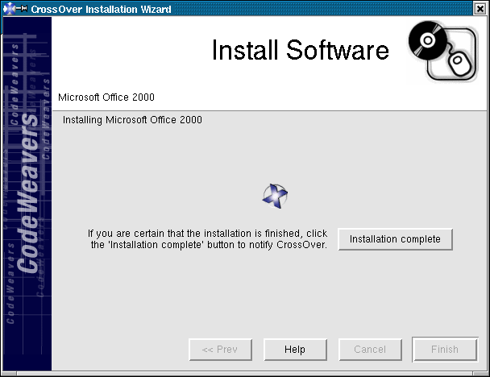
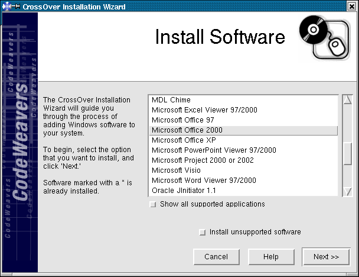
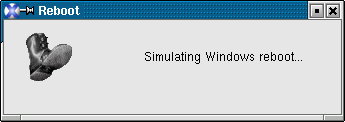
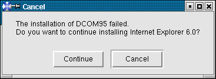

Tux has been Linux's mascot since shortly after the release of the
2.0 kernel. He's been known to be quite the fellow for the ladypenguins,
and
A Brief History Of Tux - So
Far will surely tell you more than you needed to know about this
dashing fellow. All too often, it's a working vacation for him, but he's
considering a hiking
trip or a cruise sometime this
Summer.
Heather is Linux Gazette's Technical Editor and The Answer Gang's Editor
Gal.
Heather got started in computing before she quite got started learning
English. By 8 she was a happy programmer, by 15 the system administrator
for the home... Dad had finally broken down and gotten one of those personal
computers, only to find it needed regular care and feeding like any other
pet. Except it wasn't a Pet: it was one of those brands we find most
everywhere today...
Heather is a hardware agnostic, but has spent more hours as a tech in
Windows related tech support than most people have spent with their computers.
(Got the pin, got the Jacket, got about a zillion T-shirts.) When she
discovered Linux in 1993, it wasn't long before the home systems ran Linux
regardless of what was in use at work.
By 1995 she was training others in using Linux - and in charge of all the
"strange systems" at a (then) 90 million dollar company. Moving onwards, it's
safe to say, Linux has been an excellent companion and breadwinner... She
took over the HTML editing for "The Answer Guy" in issue 28, and has been
slowly improving the preprocessing scripts she uses ever since.
We're thinking of a very special edition of "Foolish Things We Do With
Our Computers". If you did something foolish, or had something foolish
inflicted upon you by your otherwise favored silicon lifeform, and
you're willing to have just a little more fun with it in public, send
it along to us.
This does not have to be in article format. You can just send it to
The Answer Gang (tag, at our happy domain linuxgazette.net) with the
subject "Foolish Things With Computers" and we'll gather them all up and
roast marshmallows over them. Let us know if you want your name left
in - we'll take these anonymously too. But don't just make them up; we
want real tales that make us groan and go agh I won't do that again!
In the issues numbered about 85 to 89 we had articles about the use of
voice on computers in developing areas, for hadicapped usage, and the
like.
Sound systems on Linux have improved considerably - we've had Jimmy
cover "Songs In the Key of Tux" - but we haven't come back to the topic
of ordinary voices. Voice Over IP got a mere nod in my Answer Gang
blurb last Summer.
If you are interested in writing an article on this topic, see our
article submission guidelines
and then drop us a line!
Sent to our author Kapil Hari Paranjape privately, printed with
permission.
-- Heather
Hello,
and thanks for your amusing article about the Knight's tour in
Linux Gazette. I don't understand Python, but I have some
experience of the Knight's tour problem.
Mathematicians might have annoying habits, and one could be
to end their articles with Exercises
Like:
4.There is apparently a better algorithm than Warnsdorff's for the
Hamiltonian circuit. Find it and implement it.
with some decently efficient Java applets and some about the research
done about the problem of how many closed tours there are.
(At least I would call that problem 'hard')
Once again, Thanks for your article
and Best regards
Here's a reply to my posting of the Packet Writing material on my own
site. I've gotten his permission to forward this into TAG as commentary
on the original, so if you want to use it... ?
best,
.brian
Hi Brian,
Actually the time for UDF formatting of a CDRW is consistant with Nero's
packet driver (InCD) under Windows. InCD used to have multiple selections of
"Format" and "Quick Format" available but only the "Format" option was
available for a BLANK CDRW disk and formatting could take up to 45min to an
hour. A previous formatted UDF disk would let you "quick format" and take
considerably less time; some times as short as 6min.
Of course, I suspect the "quick format" is really only doing a quick erase
and random verify of the file system. This would be similar to a 'quick
erase' of a CDRW disk which was written/formatted as an iso -- erase the
header and directory structure but don't bother with rest of data (i.e. lets
hope the surface, etc. is OK and we'll just overwrite for the new
compilation).
I had a Mount Ranier capable CDRW drive at one point and I noticed that it
worked a bit differently. Apparently MR drives can format and write "at the
same time" and also do formatting in the background. So, when using MR
(instead of UDF 1.5) it appeared only the disk headers and directory
structure was initially formatted. Then, as data was sent to the drive (by
"drag and drop" or whatever) it was cached and buffered, then the space
needed was formatted and written to in the background. When the disk was
ejected a significate delay occured while anything left in the cache was
written out to disk and the disk cleaned up. It appeared that only as much
of the disk was actually formatted as needed because you could "force" a
full disk format in MR and it would take about as long to complete as a
format as UDF.
Users should also be aware that UDF file systems are much, much less safe
than standard iso compilations. They are more effected by heat. Not all UDF
file systems are equal -- especially now that various revision levels are
out (UDF1.5 appears to be "standard recommended" while there were revisions
up to 2.5 last time I looked). In practice I've found that using packet
writting is tends to work only for the computer/drive you write it on and
only for relatively short term storage.
Note the fact that Windows XP's setup for CD writing uses a disk buffer and
writes only a iso. It simulates a "drag and drop" random access file system
by mapping the CDRW disk to the buffer (actually a system folder called "cd
burning") and then just burns asks to burn a standard iso. For adding to a
written disk it appear to load what is already on disk to the buffer adding
to the new files then erase the CDRW disk and re-burn it. I suspect even
good old Microsoft figured the odds of including UDF packed writing would be
adding another can of worms to XP.
David Yerka
PS: I have been testing Xandros OC 3.0.1 and I find I like it quite a bit. I
didn't find 2/2.5 really ready for an average business user but Xandros 3
looks to be a true MS desktop killer. A number of my clients are fed up with
paying through the nose for Windows "upgrades" -- some really feel MS
tugging the chain -- so they are very interested. I even have one office
where the practice management application will run under Crossover Office --
and the developers have decided to commit to a Linux version for release
next year.
This was pretty good article but it seems to leave out something.
Because of that I've had hours of pain.
Perhaps a note could be added.
Here is what seems to be missing:
setting up AXIS_HOME, AXIS_LIB, and AXIS_CLASSPATH, as in
set AXIS_HOME=c:\axis
set AXIS_LIB=%AXIS_HOME%\lib
set AXISCLASSPATH=%AXIS_LIB%\axis.jar;%AXIS_LIB%\commons-discovery.jar;
%AXIS_LIB%\commons-logging.jar;%AXIS_LIB%\jaxrpc.jar;%AXIS_LIB%\saaj.jar;
%AXIS_LIB%\log4j-1.2.8.jar;%AXIS_LIB%\xml-apis.jar;%AXIS_LIB%\xercesImpl.jar
;%AXIS_LIB%\wsdl4j.jar
Can somebody look into this? It never happened to me...
Please confirm if this is fake or not.
Tille.
...............
Date: Mon, 28 Mar 2005 16:57:59 -0800
From: Brian Wildasinn <address_elided>
Hello TLDP,
URGENT NOTICE: Trojan LG TLDP archives alert!
On March 25, 2005, I download some files from TLDP. My download script shows a time stamp of 9:10PM, which downloaded the entire ftpfiles directory at linuxgazette from my home LAN at 66.218.50.80.
I have a WinXP notebook attached to a wireless access point. After downloading some Linux Gazette tarballs from http://linuxgazette.net/ftpfiles, my security scanners show an active suspicious port open. I could telnet into port 5400 on WinXP from my FreeBSD box over my LAN.
Using NMAP security scan on FreeBSD `nmap -sS -P0 <wireless access point w/WEP encryption/router MN-700>` showed port 5400 open, which is described as "5400/tcp excerpt Excerpt Search" or Bladerunner Trogan.
Here is the results of ClamWin from my infect notebook:
Can somebody look into this? It never happened to me...
Please confirm if this is fake or not.
What you have there is a pair of false positives. I'm not sure what in
Linux Gazette issue 86 Clamwin thought was an instance of
"Exploit.IFrame.Gen", which I gather is an MS-Outlook exploit. The
Gazette has a feature near the end of many issues where the text of
particularly hilarious spam and/or virus mail is published and mocked,
so that might well be it.
I would guess that the "HTML.Phishing.Bank-1" Clamwin thought it found,
I'd guess it was (likewise) erroneously triggering on the "Spam
Cuteness" item in Jimmy O'Regan's "Linux Launderette" column.
Brian, there's nothing wrong with paying close attention to your
anti-virus software if you're on MS-Windows, but you'll want to read the
results with at least a little skepticism: For one thing, given that
the Linux Gazette files are a magazine, and that you read the contents
rather than executing it as a program, it's unclear to me how -- even if
every issue were packed chock-a-block with MS-Windows worms, trojans,
viruses, and exploits -- those could have been anything but inert
curios.
You may indeed have an alarmingly open "port 5400" on your MS-Windows XP
box, of course -- for entirely independent reasons. Good luck with that.
This page edited and maintained by the Editors of Linux Gazette HTML script maintained by Heather Stern of Starshine Technical Services, http://www.starshine.org/
The Answer Gang
Linux Gazette 113: The Answer Gang (TWDT)The Answer Gang 113:
...making Linux just a little more fun!
The Answer Gang By Jim Dennis, Jason Creighton, Chris G, Karl-Heinz, and...
(meet the Gang) ...
the Editors of Linux Gazette...
and
You!
We have guidelines for asking and answering questions. Linux questions only, please.
We make no guarantees about answers, but you can be anonymous on request. See also: The Answer Gang's
Knowledge Base
and the LGSearch Engine
Hello folks, things are a bit hectic over here at ye olde Answer Gang. It's
been a complete madhouse - no wait, an incomplete madhouse -
Just check out the Lifehacks we have this month. Hopefully they'll keep
your life less tangled than ours. We're saving up our Tips and our threads
from The Answer Gang about Linux itself will be
back next month, after we get
the backhoes rolled away, and the forklifts are gone... Sorry for the
dust, folks.
There's a friend of mine who says, when tech does poorly, buy stocks
in raw materials for construction. After all we know the backhoe is the
real enemy of the internet! I wonder if it's time to sell those puppies -
it looks like things in the tech world are pretty much looking up. Not
necessarily all at once, but certainly, there are signs of Spring. Renewal
is here, there are random() seeds everywhere. We're getting to the
/root of things (with a bit of hack and /-ing, true).
Duck season, wabbit season... allergy season.
Ok, enough of that, I'm hiding indoors and doing programming until
Summer.
Share drinks with your friendly local bartender in the TAG lounge, and
this is what you get:
Happiness is like water. It might come back as rain, but it's always there
if you look for it.
Diving into something new, or coming out of deep waters? Sploosh.
Remember to protect your silicate buddies from the elements.
See you next month, folks
p.s. Yes, we do celebrate April Fools Day around here.
Please send us any Foolish Things You Did With Your
Computer for a special run in next month's issue. Any particularly yummy Answers you have discovered, are
also welcome; by this means you, too, can join The Answer Gang!
Send your submissions to: tag .at.
linuxgazette.net - Thanks!
p.p.s. Yes, questions are good too, we're always eager to answer you.
Well, almost always. We don't guarantee an answer (tho stumpers are likely
to land in Help Wanted). However - please don't ask us
things you don't want published - the Gang's not a private place. But you
can be anonymous, you only need to ask that too. -- Heather
Lifehacks
From Jimmy O'Regan
Answered By: Jimmy O'Regan, Brian Bilbrey, Raj Shekhar, Heather Stern
I'm looking for everyone's lifehacks. For more information about what a
lifehack is, scroll down -- I've included the introduction to an article
I was writing for another site (cough) that I couldn't make relevant
there -- but in short, it's things that make your life easier, like Ben's
quote catcher or my screen scrapers (they save me ~5 minutes per day
that I can waste on IRC instead
.
So drag out your ugly scripts, or at least say what they do in
principle. (No, I don't have any that haven't been made into articles
already :)
-- Jimmy
Lifehacks
Lifehacks
are an idea that was put forward by
Danny O'Brien
at the
O'Reilly Emerging Technology Conference
. Lifehacks are the result of taking one of the basic principles of
self-help -- find out how the experts work,
and emulate them -- and applying it to geeks.
One of the least surprising discoveries of the Lifehacks research is
that "Overprolific Alpha Geeks" spend most of their working lives using
the shell. Two of the
conclusions
of the talk are that geeks will have private blogs/RSS feeds.
Why would you use private blogs?
Most people need to provide their bosses with periodic reports. Because
feed aggregators are available for almost every imaginable platform,
reading feeds is not an issue. Having reports available in a private
blog offers two immediate benefits: each report is archived in a known
location; and the feed reader provides notification of new entries (as
well as keeping its own archive of entries). Making reports available as
a feed can also boost productivity and increase communication --
sysadmins, for example, can generate many of their reports from log
files, and add this to the feed so their boss no longer needs to wait
around for a formal report; programmers can use scripts in CVS (or other
version control systems) that generate a report containing a list of
changed files and the log message for every commit.
A popular use of blogs is as a whiteboard -- people thinking out loud,
inviting passers-by to offer suggestions or criticism which may help to
improve an idea. By maintaining different blogs with varying levels of
availability, people can share ideas with the appropriate audience
without revealing things they would prefer to keep secret.
The most basic advantage of writing down an idea is that you no longer
have to worry about remembering it. Even writing to a completely private
blog, as a "todo" list, has advantages. Writing an idea forces you to
clarify your own thoughts: the simple act of writing an idea down to
remember it can lead to you expressing it well enough to share it with a
wider audience. Once an idea is written, it can then be refactored --
you can share it at a later date, when you have developed it further.
Another advantage is that each blog entry is automatically dated, so
each idea can be compared with public blog entries from the same time,
so you can discover why the idea was relevant; and if nothing else, a
blog provides you with a single place where you can archive your ideas
and
"secret scripts"
in case you need them again.
Semi-public blogs, available only on a company or department intranet,
allow co-workers to keep track of each others activities and to offer
and receive suggestions about ideas without publicly exposing company
secrets. Information put on a semi-private blog may later become
suitable for public consumption, such as a note about a bug in a
product, or information about server downtime.
[Brian]
Thank you.
Thank you, Thank You, THANK YOU!
This is the sort of thing that I've been doing unconsciously for the
last 20 years, and what's been lacking is the vision to make it a
conscious process.
Every machine I have does webserving, I drop stuff into the serving
space for testing, for review, for remembering.
I put stuff on my public site so that when I forget I ever knew how to
do a thing, I can google for the answer and find what I wrote once upon
a time (that's happened THREE times in the last year).
I rsync everything, everywhere. Cron takes care of most of it,
occasionally I'll manually run a set to a sometimes running box, and
then shut it down and put it in the basement. Mostly that's private
stuff, and not the things that can be replicated or are static,
committed to DVD+R (like the ogg collection).
I run
phpGroupWare
at work with Calendar, TroubleTicket and Todo modules active.
I publish fun and useful links in my webspace on the internal server -
everything from a demo of how the Windows messenger error looks when
Samba +
ClamAV
+Samba-vscan catches an inbound virus, to the mods I might
make to my cube to get a nerf-weapon war type of battle-cube.
All of my email accounts are IMAP, I have 5 active places, and I copy
stuff from account to account, in and out of the assorted todo
sub-folders as I want to apply the topic to the part of my life in question.
[Jimmy]
I do the same. Anything that I really like, or may need in real life,
I email to my phone (my phone has Blackberry email, so email to my
private account comes in like an SMS message: straight to the phone, no
need to check :)
Email is one of the top geek ways of keeping information, according to
that survey. Wanna remember something, mail it to yourself.
[Brian]
I don't have a useful PDA. I've had FUN ones, linux-based, but I'm
thinking I need a real one, one of these days. Useful AND used. All the
Linux ones provided tools to sync/work with Windows boxen. Um, sorry,
don't run that one, got any other choices? I'm leaning towards Treo. Any
thoughts?
[Jimmy]
I use my phone as a pda. Getting
SyncML
going is something I really want
to do, but I'm not sure I want to be synchronising across the Internet
when the phone is right beside the blasted PC :(
[Brian]
I have one "blog" that I'm experimenting with, using
Wordpress
. There are parts of it I like, but for many purposes I really like the
read-in-time-ordinal of journalling rather than the reverse mode of
Blogging. I suppose that's why I've never really mentally connected with
RSS feeds, even though a great number of people I know think that feeds
are the greatest thing since sliced bread. Are these "problems" for me?
Am I just in the wrong phase of a Candlestick-Two Faces conundrum?
Thoughts, please...
I LOVE the idea of using a blog as a log watch aggregator. That ROCKS!
[Jimmy]
Heh. That was an obvious use I didn't see mentioned. Back in college I
used to have a bunch of scripts that ran grep over various log files,
diffed them against yesterday's, and mailed the result to an admin account.
I used them to track things like who used su and when etc., and had
something similar in root's .bash_logout so I could compare and see who
was doing what (not to snoop, just to offer a helping hand to the newbie
admins).
[Brian]
What's in my ~/bin: 87 scripts, mostly ugly hacks to run CLI and GUI
tools in a specific order. For example:
Since the USB card reader doesn't ALWAYS see media inserted, a quick
cfdisk brings that problem to an end. I mount the card, copy the
contents to the directory I specified on the commandline. Ick, no test
for correct input, eh? Unmount, prompt, call another script to convert
all to 640x480. use
GQview
to pick and choose. Those I keep, I may edit
using
GIMP
from within GQview. When I'm done, I have the 640x480 snaps
that I'll use on the website. Exit GQview and the script continues. Make
thumbnails of the remaining files. Copy everything into my local copy of
the webtree. Blow the whole processing tree away, leaving me with camera
originals on the disk. I don't use this one much anymore, because I have
a new camera and a new method of doing some of that stuff. I haven't
automated it yet because I've been too busy to save time. Sigh.
[Jimmy]
I keep my photos on
flickr.com
(and on CD, but they're easier to find on
flickr), and my links on
del.icio.us
. In issue #110 I described what I use
to get a montage of my last N photos (
Flickr and Perl
) and
My tip in #112
has a script I use to get a Netscape bookmarks-compatible version of
all the links I have in del.icio.us.
[Brian]
I have another little script, a three liner that drops me down into the
current year's working directory in my web space, pops a firefox window
pointing at http://localhost/xxx/xxx/blah.php, and fires up bluefish
with the most recently edited page in the window.
I have a number of scripts dedicated to setting up ssh tunnelling for
VNC
connections to windows desktops at my last-but-two employer out in
CA, where I still consult from time to time, and it's much easier to
answer Netscrape or LookOut questions when they can SHOW me instead of
trying to describe things over the phone.
[Heather] For being able to show someone _else_ that VNC session,
VNC snapshot
over at sourceforge looks nice...
[Brian]
I have lots of little scripts for rsyncing chunks of my local machine to
other places, for web publishing, for backup, for sharing data.
I need to spend more time being efficient, writing still more tools to
do my work for me.
[Jimmy]
Same here. I'm finding more and more that it pays to take a step outside
myself and really pay attention to what I'm doing, then use this function:
[Raj]
One thing I use heavily is Emacs. It has a number of nifty modes which
make life much organized for a programmer. I will list a few
especially good ones
PlannerMode is an organizer and day planner for Emacs. It helps you keep
track of your pending and completed tasks, daily schedule, dates to remember,
notes and inspirations.
emacs-outline-mode:
very useful if you are writing an outline for an
article or just taking notes. (I find wiki-mode more user friendly, see
below)
[Raj]
emacs-wiki-mode:
This is a Emacs mode for maintaining a local Wiki.
Though I use it for making outlines of articles and keeping notes during
meetings. The main idea is that you write using plain text, but it is
rendered on emacs as html. (emacs-wiki-mode comes with emacs-planner-mode)
Instead of having a personal blog to keep a track of
personal-todos/inspirations etc. , I use a wiki:
http://rajshekhar.net/wiki
[Heather]
The great thing about
MoinMoin
is, it supports access control lists,
so it can be public and private spaces at the same time.
Yeah, pardon my dust over there at SysadMoin, it's only available inside
our LAN at the moment while I'm preparing an upgrade. Not moin's fault - I
had a hard disk go crunch - most annoying - geez, it's a good thing I make
regular backups. A few merges, oh, I have to re-do my dark theme too...
Ahhhhh, backups. If there's one "hack" I've taken back
out of the computer world into my real life, it's making sure to have
backups. Backup plans, backup copies of contact info, someone to backup
for me if that old problem about not being able to be in two places at
once strikes home. Save early, save often, save extras.
Over in #moin on freenode, where I have been hanging out a lot lately,
there's one fellow (deitarion) who's cleaning up not only a lifetime
of loose notes but also organizing and commenting on a number of files
he's gathered over time, using MoinMoin Desktop Edition, in other words,
a wiki designed to be personal:
http://moinmoin.wikiwikiweb.de/DesktopEdition
He seems to have saved a bunch of space already and be working on some
search engine tricks for it, combining it with
GTKtalog
(commandline fans may prefer
SwissDB
)
and planning on a local web proxy to manage his external bookmarks.
He's working on saving enough space and/or being clear enough on what's
his, to have this help his emigration from his current distro to Gentoo.
[Jimmy]
One of the best tips I saw is one from JWZ. He keeps an /etc/setup
script, and every time he does anything from the root account, copies
and pastes it into the script, and comments it saying why, before
copying it to his other machines, so he can have every machine set up to
exactly the same state whenever needed.
[Heather]
Jim (the Answer Guy) and I both keep a README file for each of our
machines, either in /etc or in / (I like to hardlink them together;
keeping /etc on a seperate partition from / is rare and creepy, but a
symlink would do nicely - hardlinks, though, protect it from being
deleted by the fs if one of the links is removed).
This file datestamps any interesting changes we do to a machine,
possibly including script bits, fstab tweaks, etc. Reading it should
be enough to figure out how to spin up another machine just like this
one even without the box itself.
I also keep one of these in each complete chroot area I set up, since I
treat them like whole machines. Which brings me to the next Lifehack :)
For chroot'd environments that aren't just the single app, I change its
/etc/hostname to something that clarifies what it is (past examples
include "rescue", "minideb", "dev-potato", "memoryalpha" for my trek
stuff), and I change the part in the root user's setup (/root/.bashrc)
so that instead of asking for hostname:
export PS1='\h:\w\$ '
...it uses the contents of the hostname file:
export PS1="-=[ `cat /etc/hostname` ]=- \w\$ "
Note the doublequotes - if you use single quotes, the command to cat the
file is going to be used every time, and you don't really change a
chroot's hostname all the time, do you? (I certainly don't.)
Since my chroot'd prompt also looks different, even without colorization
tricks that I use on my terminals, I can easily tell that I'm in the
chroot, and which one I'm in. So nice when I'm ssh'd in and using a
screen session heavily.
If you haven't heard of
screen
then for goodness' sake get it. Job control
is nice, but this gives whole windows with real terminals, so the
human can multitask too; things that you might want to background can
be run in another window where they think they have foreground; it can
be told to log one of its windows (great when a compile or some other
scripted thing is about to spout lots of text you want to read later, or
grep through); with some rather careful permission settings it can even
be used in multi-user mode, so you can show a junior admin, your kid
sister, or a linux newbie you're helping spin up to speed, the exact
things that you're doing. With screen you don't need X and vnc unless
you need graphics :)
We're nothing but the stories we tell ourselves. We know in our hearts what
kind of people we are, what we're capable of, because we've told ourselves
what kind of people we are. You're a carefully-rehearsed list of weaknesses
and strengths you've told yourself you have.
(Self-confidence, for example, is a particularly nebulous quality you can
easily talk yourself out of having.)
You owe no allegiance to that self-image if it harms you. If you don't like
the story your life has become -- tell yourself a better one.
"How to Make a Complete Map of Every Thought you Think"
(http://speakeasy.org/~lion/nb) is a braindump book about how to keep a
paper version of a wiki.
Submitters, send your News Bytes items in
PLAIN TEXT
format. Other formats may be rejected without reading. You have been
warned! A one- or two-paragraph summary plus URL gets you a better
announcement than an entire press release. Submit items to
bytes@lists.linuxgazette.net
As always, you should download kernels and patches from your
nearest mirror.
Intel License
Intel has tentatively proposed
eliminating the Intel Open Source License, substituting
for it the more common BSD license. This would be a small
contribution to reducing the proliferation of licenses that
has occurred in recent years.
Nero, the popular Windows CD/DVD burning software, has
recently been
released for Linux.
NeroLinux is a closed source application, and is available
free of charge following registration on the Nero website.
Originally hailing from Ireland, Michael is currently living in Baden,
Switzerland. There he works with ABB Corporate Research as a
Marie-Curie fellow, developing software for the simulation and design
of electrical power-systems equipment.
Before this, Michael worked as a lecturer in the Department of
Mechanical Engineering, University College Dublin; the same
institution that awarded him his PhD. The topic of this PhD research
was the use of Lamb waves in nondestructive testing. GNU/Linux has
been very useful in his past work, and Michael has a strong interest
in applying free software solutions to other problems in engineering.
Part computer programmer, part cartoonist, part Mars Bar. At night, he runs
around in a pair of colorful tights fighting criminals. During the day... well,
he just runs around. He eats when he's hungry and sleeps when he's sleepy.
Free as in Freedom: Part Four: Epilog - 2000 VAIOS and a Grain of Zen
The KDE and GNOME desktop environments make it possible for people who
have no knowledge of Unix or GNU/Linux commands to use a GNU/Linux system
as easily as they'd use Mac or Windows for web-browsing, word-processing,
email, games and the things most users spend their computer time on. It's
only going to get better, and one day many people might know GNU/Linux only
through the GUI.
I asked Okopnik, "Do you think this is a 'good' thing, that people are
finding out they have an alternative, but at the same time using that
alternative almost exclusively on the GUI level, like they would use Mac
or Windows? Have you noticed more of an interest in Linux or an enhanced
readership since Linux became both market and user friendly? If so,
are these new users less interested in the "technical" aspects than in
having a stable GUI-based system to for work and email and net-surfing?"
Okopnik wrote, "Actually, this is an issue that I brought up in an
involved discussion with the LG staff and the Answer Gangsters (The
Answer Gang answers Linux questions sent to us by our readers, and the
discussions and the answers become part of LG.) My viewpoint here is
that it's actually a very good thing - modulo the awareness that the
Command Line (CLI) exists. That is, people are perfectly welcome to come
to Linux and use only its GUI capabilities as long as this serves their
needs - but when the GUI proves insufficient, the capabilities of the
CLI are there, just underneath, providing the perfect security blanket.
"In an article I wrote for Java Developers Journal, I related an
example of this. I had a client whose Web developer left them in the
lurch with several hundred HTML files without the ".html" extensions.
This wouldn't be too bad by itself - renaming a group of files isn't
difficult - but the thousands of HTML links within the files referred
to those extensionless names as well. With GUI-only tools, this is a
nearly-unsolvable disaster. From the CLI, it was a matter of a single
short line of code:
perl -i -wpe 's/<a href="[^"]+/$&.html/g' *
"The readership of LG has certainly changed over time. Where we
used to get dozens of questions on fairly technical topics in The
Answer Gang, we now get only a few - and they tend to be simpler, less
technical. The email I get from our readers indicates that there has
indeed been a definite shift in the user base; the old Linuxer who would
bang on a problem for hours so that it could be reported (and quickly
fixed) is being... well, not _replaced,_ but reduced, percentage-wise,
as the mainstay of the population. The new user is often just that -
a computer user who just wants that email/web/document/spreadsheet
processor and maybe a few games on the side. There is, however, a
cultural shift that occurs even in those users after a while: you
cannot live in a society based on a given moral premise and ignore
that premise, or even stop it from penetrating into your life (even if
you try to prevent it.) The original "hacker ethic" of Linux lives on,
strong as ever in those who use the full extent of this OS, and inherent
(and growing, however slowly) in those who use it even without that full
knowledge.
I wrote, "I was considering the license for Documentation -- I forgot
what it's called..."
Okopnik wrote, "The Open Publication License. There has been quite an
evolution of licenses on the documentation side; the OPL is pretty much
the last product of it (there are a few others) and is by far the most
popular, simple, and comprehensive. The LG remains under it because I
did _a lot_ of applicable research."
I wrote, "It almost goes without saying that this article will be
'free' but it's probably a good idea to say it because I've been
'burned' before, as have other writers I know, having articles that were
meant to be "free" stolen by publications that charge a fee to readers
-- online or off."
Okopnik replied, "This would be a good reason to implement the 'no
commercial distribution without prior permission' clause."
I wrote, "Tell me about your experience with licensing and your
research. For instance, how does one particular license affect LG as
opposed to another?"
Okopnik wrote, "When I took over the E-i-C/publisher slot here at
LG, I decided to revisit the decisions that had been made (and cast as
procedure) in the past with regard to as many of them as I could find;
in my opinion, this needed to be done to keep LG fresh and relevant.
One of these was the license under which we accept and publish all our
material.
"I had asked Rick Moen, a member of our staff who is very knowledgeable
about the nitty-gritty of various FLOSS issues including licensing to
comment on our use of OPL; I also threw the floor open to others' input. As
a result of the discussion and familiarization with the basic issues at
stake, I did a lot of my own research, and came to focus on the OPL (which
was the license LG was using at the time) and the CC, the Creative Commons
license (see http://creativecommons.org/; I
recommend the site highly, particularly their "license-choosing wizard"
which helps you pick the appropriate one for your application.) The latter
held a lot of promise and flexibility, but in the end, I had to vote
/antiquo/; the OPL, with a little clarification, supplied all our needs.
The front page of LG now states:
"All content released under the Open Publication License v1.0
(options A and B not applied)
"The clarification in the parentheses was the only thing added. Given
that the author of OPL himself, David Wiley, considers it dated (he
became CC's Director of Educational Licenses and shut down the Open
Content site in 2003), we may well transition to the CC at some point in
the future. For now, though, the OPL serves our purposes and creates no
restrictions on the author's rights (theirs supercede ours) that I would
find objectionable.
"LG's only concern is the right to distribute freely in electronic
format. Should you wish to prohibit or restrict commercial distribution,
or want to be contacted before anyone converts it to print, we have no
objection or concern; in fact, we have no say - and this is what I,
in my capacity at LG, see as perfectly suiting our needs. A slightly
different attitude than you'll find in a commercial environment, I
grant... " wrote Okopnik
I wrote, "This is a particularly interesting/different attitude for a
magazine."
Okopnik wrote, "The Open Source culture often produces those. Once
money is not the primary motivator, a number of interesting results show
up. FLOSS is a social experiment gone successful -> mainstream -> wild,
a meritocracy/gift-based culture that focuses on exchanging people's
best abilities for community recognition and respect. Part of the secret
of its effectiveness is that you can't cheat people out of respect
the way you can with money - it can always be lost or withdrawn. Like
any other human system, it has its imperfections (see Cory Doctorow's
"Down and Out in the Magic Kingdom" or James P. Hogan's "Voyage into
Yesteryear", both of which describe a respect-based system as the basis
of an economy), but they're a) usually self-correcting and b) several
orders of magnitude less extreme at the edges than what we have now."
I wrote, "It actually brings up the question, "what is a magazine"
(online or off)? I always thought of a commercial magazine as a
corporation using artists and authors to sell advertisements while
at the same time providing a venue for artist/authors' works. But a
zine like LG, which provides essential, often crucial information to a
specific audience -- i.e. Linux users -- has a unique responsibility as
an "education/information venue." By placing author's rights above the
rights of the magazine itself, you are serving as a mediator between
your audience and the kind of information you offer them."
Okopnik wrote, "/Tetigisti acu/;
well done, sir. That is precisely our function and mission. We want to
introduce people to Linux, get them to the point where they'll know enough
to ask the right questions and to find the answers. This would set off all
sorts of alarms for a commercial venture - we are, after all, training our
readers not to need us after a while - but I'll happily hang up my
editorial hat once most of the world is Linux-competent. :)"
I wrote, "I see LG as a "mediator" between Linux Users and the
millions of pages of information pertaining to Linux. At some point an
'editor' is needed, otherwise a reader can just do a Google search on
various subjects without a coherent 'theme.'"
Okopnik wrote, "Precisely so. Does it surprise you to learn that I'm
a teacher (seminars in programming, network security, etc. for Sun
Microsystems and others), and have been, in one form or another, for
most of my career? I suspect not."
"What's FLOSS?" I asked.
Okopnik wrote, "An unwieldy compromise of a name that the majority
can live with. As you've probably figured from your exchange with
Stallman, there's some disagreement about exactly what this whole
movement should be called - and Free/Libre/Open Source Software is what
we got as a result. Like dead yeast in beer, it's harmless and doesn't
even affect the flavor."
I wrote, "Interestingly, or by strange coincidence, I destroyed my
wife's Windows installation on a super-powered custom-built PC she uses
to run the Maya 3D program (she teaches computer graphics and 3D at New
York University)."
Okopnik wrote, "You do realize that Maya is usually run under Linux
these days, right?"
I wrote, "Doesn't matter; the university's program is locked
into Windows. Anyway, she warned me not to mess up her dedicated Maya
machine by 'playing around with Linux' and of course I told her this
was an impossibility -- oops. Problem was, I switched, after a year
of smooth sailing, from GRUB to LILO and totally corrupted the Master
Boot Record (MBR). This brought up an interesting point: virtually no
one knows how Windows works. I was able to fix the LILO problem, but I
had no idea how to do anything in Windows, nor did many people I called
who actually teach courses on the Windows OS. To make matters worse,
the only boot disc available was the original installation CD, which
you can only access via a password, which we forgot. So, even though we
"owned" the system, there was no way of getting in. We had to call in an
expert, the person who built the machine and installed the software, the
President of Compusoft Computing Systems himself, Philip Keough, who is
all of sixteen years old..."
Okopnik wrote, "In an information-based economy, intelligence (and
the wisdom to use it correctly) is the winning factor. The side
effects still tend to surprise the hell out of people, which makes for
interesting food for thought."
I wrote, "I recognized this as an opportunity not only to save my
marriage, but to interview a certified computer whiz from the 'younger
generation' (painful, those words) who grew up with both Windows and
Linux. His high school -- I think the President of Compusoft Computing
Systems is a junior -- just provided a Sony VAIO laptop for every
student, loaded, of course, with Windows XP. The school was considering
GNU/Linux, but decided to go with the 'industry standard.' I asked him
if anyone among his hacker friends, not the 'mainstream students,' was
into GNU/Linux, which I thought would be the OS for rebellious young
geeks. His answer was exaclty 2 out of 2000 sudents, are familiar with
GNU/Linux: himself and some other kid who publicly proclaims 'give me
Linux or give me death' but secretly runs Windows 2000 as his main
installation. I asked Philip why this was so, why kids at such a young
age would want to feed into the 'industry standard' way of life. His
answer was that Windows felt more "professional" just as Adobe Photoshop
was 'more professional' than The GIMP. So much for garage-band rebellion
and the Ramones...
"If what he was saying is true, and Mac is viewed as something for
graphic artists, like the old SGI, but otherwise obsolete, then there
is only one operating system on earth, and it's a damned bad one," I
wrote.
Okopnik wrote, "You have to remember that the OS competitive arena
is the entire world, while what you heard was a single opinion from a
single person in a single location. Furthermore, if he had said 'Windows
can do X, Y, and Z whereas Linux can't', or 'the software that we're
mandated to use requires Windows', well and good (although I don't think
that it's possible to defend the first argument); since his entire
area of focus is on how an OS 'feels', then he's off into mysticism as
opposed to rational judgement."
I wrote, "So, in reference to your LG audience: is GNU/Linux just
a toy that hackers boot on week-ends to unwind, or is it viewed as
a genuine alternative to Windows? The feeling I'm getting, or I
was getting from Philip, is that even the most dedicated GNU/Linux
enthusiasts share their hard-drives with some version of Windows for use
in the 'real world.'"
Okopnik wrote, "Well, let's see. Many schools, hospitals, and
government installations in India run Linux. Same for South Africa. France
has passed a law that says "Open Source is to be implemented whenever
possible"; Brazil, which was 8% of Microsoft's business a couple of years
ago, has followed suit. Germany has been using Linux in their security
departments, and is now implementing it at every level - federal, state,
and local. China has decided that it's their official OS; Korea and Japan
have joined them in investing several billion dollars in FLOSS software
development recently. Most of South America is switching, led by Peru (Dr.
Villanueva Nunez, a Congressman, responded succinctly and brilliantly to
the fear-and-doubt tactics that Microsoft tried to sow when the decision
was made; the translation can be found in many places on the Net.) This is
just off the top of my head; there are many other countries which have
decided that FLOSS simply _works_ for them (generally by making them
competitive in the world market and removing an unnecessary barrier to
their pool of talented but poor would-be techies.)
"Special effects - in e.g. Titanic, Shrek, The One, and many other
movies - are being done on Linux, simply because you _can't_ build
a real server farm for crunching serious processing under Windows
(incidentally, one of the most powerful computers in the world is a
massively-parallel rig built by students in Australia. Guess what it
runs?) The overwhelming majority of Web servers on the Net run Linux
- and many of those that don't are running Apache, a piece of FLOSS
software.
"I hope these random examples begin to add up to a coherent picture.
I couldn't even start to draw an outline of just how huge and pervasive
the entire FLOSS penetration into the OS market actually is," Okopnik
wrote.
Okopnik added, "Mac's gone FLOSS. Well, almost completely, anyway: the
base of Mac OS/X is another free Unix, BSD. The only part they haven't
really opened is their desktop manager (if I recall correctly, it's
called "Aqua") - but you can run plain ole' X on Mac hardware, and it's
available right from Apple's site. What's more, Apple has been edging
toward releasing the older versions of Aqua as FLOSS; their real edge
has always been as a great hardware and User Interface (UI) company
anyway, so they wouldn't lose anything.
"A lot of FLOSS software, unsurprisingly, can be compiled to run on
OS/X; the instructions for doing so are, again, available on Apple's
site - and so it a lot of already compiled FLOSS. Did I mention that
we're taking over the world? :)," Okopnik wrote.
I wrote, "But Mac long ago ceased to be any kind of real competitor
to Windows. Like the old Soviet Union kept the U.S. in check and vice
versa. Now the U.S. is a Monopoly run rampant -- like Microsoft. A
closed system is a closed system. The rest of the world, developing
better software on Linux, will catch up while Microsoft, who keeps its
position only through use of 'force' will wither up and die," I wrote.
Okopnik wrote, "Is it as obvious to you as it is to me and many
others? I don't understand why more people can't see that basic fact -
other than simply not knowing or understanding the issues."
I wrote, "I came across this quote by Stallman on the gnu.org site
(www.gnu.org/thegnuproject.html):
'The "Linux" magazines ... are filled with advertisements for
proprietary software that works with GNU/Linux. When the next Motif or
Qt appears, will these magazines warn programmers to stay away from it,
or will they run ads for it?'
"Response?" I wrote.
Okopnik wrote, "As it happens, LG is the one Linux publication that
does not accept advertisements, and therefore does not follow Stallman's
dictum; we prefer to remain totally unbiased (except by our own personal
prejudices, of course. :) I have to agree that commercially-driven
magazines do have their bottom line to consider; perhaps not above all,
but it is a very strong motivating factor. I'll admit to being actually
shocked for about 30 seconds when I saw a Microsoft ad in the Linux
Journal... but sober consideration prevailed. There's no reason that
they shouldn't have - the ad said nothing derogatory about Linux and was
placed in the more-or-less correct market for MS's purposes - but it did
make for an interesting contrast.
"For the people who were outraged by this - and judging from the
comments on Slashdot and elsewhere, many were - I'd suggest considering
the following Buddhist koan:
"'Always meditate on whatever provokes resentment.'
"Very interesting questions can be found in the moment between the
emotional response and the reaction..." wrote Okopnik.
I wrote, "Sometimes I wonder if I should be writing two different
articles, the GNU Story, and Everyone Else's. They're kinda picky with
their "GNU/Linux" not "Linux" and initially boycotting KDE because qt
was "proprietary" but I guess you need people like that, people who are
ready, willing and able to go 'all the way' to get a movement started.
If you don't mind me 'requoting' you from the previous section of this
article:
'We _need_ our radicals. They're ugly, scruffy, pushy, aggressive, loud,
and unfit for normal humans to associate with - but, O Ghod do we need
them! They sacrifice themselves on the altar of whatever the hell their
passion may be; they give up their right to be seen as "normal", and
make of themselves targets at which the majority of society will fling
rocks and garbage - and we, the human race, get to move ahead just
another tiny notch for each one of them. Granted, there are radicals on
either side of the fence - and lots of different fences - but the total
vector of these little steps *is* in the direction of progress; another
pragmatic belief of mine, and although I won't go into the philosophical
ramifications of it, it can be summed up as "'good' is just another way
of saying "pro-survival".' -- Ben Okopnik. That's you," I wrote.
Okopnik wrote, "I might add, 'Listening to these folks, however,
_does_ require turning down the volume and intensity controls, and
keeping a supply of large grains of NaCl handy. :)'"
I wrote, "I just want this article to introduce GNU/Linux to people
who aren't aware that it's a valid option -- especially now that KDE
and GNOME provide GUI 'desktop environments' that anyone can use.
Good to know know LG is sticking to the straight and narrow regarding
advertisements for proprietary software, though."
Okopnik wrote, "Well, we don't have an articulated social contract the
way Debian Linux does (http://www.debian.org/social_contract),
but we do have our priorities. 'Making Linux a little more fun' does not
mean distorting the truth for profit - and that includes being cautious
with regard to slippery slopes."
This work is licensed under a Creative Commons
License. It is free to distribute, reproduce or modify with the
author's consent. Read more about licensing software, text and
documentation at http://www.creativecommons.org.
Adam Engel has published poetry, fiction and essays in such magazines and
periodicals as Counter Punch, Dissident Voice, Online Journal,
Strike-the-Root, LewRockwell.com, The New York Art Review, The Concord
Journal, The Middlesex News, Accent, The Littleton Review, Ark, Smart
Shoes, The Beacon, Literal Latte, Artemis, The Lummox Journal, Fearless,
POESY, The Half Moon Review, Art:Mag, Chronogram, Gnome and others.
Adam Engel's first book of poetry, Oil and Water, was
published by Maximum Capacity Press in 2001. His novel,
Topiary, will be published by Dandelion Books in the
Spring of 2005.
He has worked as a journalist, screenwriter, executive speechwriter,
systems administrator, and editorial consultant, and has taught writing at
New York University, Touro College and the Gotham Writer's Workshop in New
York City.
Here is a short course (with some excursions) to help you take your
existing Desktop, roll it into an ISO pipe and smoke a USB stick or CD.
This is not a task for the faint-hearted - there are no automated scripts
in here!
Part of the reason for this hands-on approach is that each desktop
system will have its own quirks, so writing scripts which handle the
various conditions which might arise is painful. Secondly, there are
numerous choices possible - you must mix your own. Finally, I must confess
that I do not feel energetic enough to write the scripts at this point.
Instead, you have this article!
So if you have spent a lot of time fine-tuning your configuration and want
to waste some more time putting it onto a (re)movable drive - read on.
Making a read-only root filesystem
Since the chosen medium for our ``live'' portable system is a CD or
USB stick we do not want to write to it often. In fact, in the case
of a CD-R we can only write to it once. It should be obvious, however,
that a ``live'' system does need to write something if it is
to be counted as among the living!
While many mechanisms have been suggested to handle this, we
will (essentially) follow the system chosen by bootcd. To do this,
we need to create a directory /wraith, an archive
/wraith.cpio.gz and a script /etc/rcS.d/S01undead.sh.
The contents of the archive are rather system specific so you
will need to choose its contents. However, if you are really,
really impatient you can download the
listing
of the archive that I use and run the following:
Did you get a lot of error messages? No? Are you really sure
that your system is almost identical to mine? Yes? Then you can skip
the next subsection.
Choices, choices...
How does one find out what files need to be written to on a live system?
One way would be to find all the files that have been written
to on your current desktop. To do this first find out when the system was
booted - a good measure of this is when the root filesystem was last mounted.
So for example
# Use your real root device in place of /dev/root.
last_boot_time=$(dumpe2fs -h /dev/root | \
sed -n -e's/Last mount time: * //p')
You may wish to use the log files or the last command instead.
You only need to know the last boot time approximately; subtract a minute
or so from it just to be on the safe side - unless you boot the system
more often than that! Now create a file with that time stamp using the
touch command:
touch -d "$last_boot_time" /tmp/lastboot
You can now create the list of all files that were modified since that
last boot (for simplicity we will only bother with the directories
/etc and /var; you can add some other directories if
you so desire):
find /etc /var -newer /tmp/lastboot > /tmp/changed
# And, just for fun...
find /home -newer /tmp/lastboot > /tmp/home_changed
Have a look at these lists but don't delete them just yet. You should notice
that there are three types of files that are written to on a running
system.
Files that are automatically written to but can be empty at the
start like log files or the mozilla cache directories.
Files that have information which we may want
to change but rarely. Most configuration files fall into this category.
Automatically generated databases of system information. Since
our system is going to be ``static'' we actually do not want the
system to update these databases. Thumb-rule: If the file is large in
size it probably belongs here!
We will split up our list, /tmp/changed, according to this
classification: /tmp/write will consist of those files (mostly
directories) that are empty at boot time but get written to as the system
runs; /tmp/links will consist of the files that will be
quasi-static - we will keep a static version of these files at boot time
but we might want to change them on a running system. We will include the
third category of files in /tmp/links as well, since we will not
treat them differently - but ultimately you may want to change this.
We first create a directory to hold the files that will be modifiable
at run-time - say /wraith. Mount a RAM-based file system on it
by mount -t tmpfs tmpfs /wraith. Big Fat
Warning: This file system is ephemeral and will be lost
when you halt the system. If you wish, you can use the directory as-is
(without the tmpfs mount) during this subsection, but don't
forget to clean up its contents once you have created the archive as
explained below.
In /wraith, we will create the top-level directories like
etc, var, tmp and so on that we will
want to write to. In these directories we will create the files as per the
classification above. First, we'll do the writable but empty files:
cd /
cat /tmp/write | cpio -pdum /wraith
We expect these files to be empty at start-up so we will ``zero''
them. Do this only to the files for which you don't want to keep the
contents. For now I assume these are all the files in the list
/tmp/write:
for file in $(cat /tmp/write)
do
if [ -f $file ]
then
> /wraith/$file
fi
done
Of course, we also need an empty tmp directory:
mkdir /wraith/tmp
chmod 1777 /wraith/tmp
Next, we create the links.
cd /
for i in $(cat /tmp/links)
do
dir=$(dirname $i)
top=$(echo $dir | cut -f2 -d'/')
rest=$(echo $dir | cut -f3- -d'/')
name=$(basename $i)
mkdir -p /wraith/$dir
ln -s /wraith/$top.ro/$rest/$name /wraith/$i
done
# As a safety measure to ensure that all configuration files
# have been created
mkdir -p /wraith/etc
cd /etc
for i in *
do
ln -s /wraith/etc.ro/$i /wraith/etc/$i
done
This is more complicated and needs further explanation. The idea is to
make the ``static'' versions of the files available under the .ro
top-level directories. So, for example /wraith/etc/hostname will be
a link to /wraith/etc.ro/hostname.
To see this at work create etc.ro and var.ro as
sub-directories in /wraith. For each of these directories (say etc)
we run a pair of commands like the following. (Warning: Be careful here. If
you haven't created all the links in /wraith/etc as above you may crash
your running system).
mount --bind /etc /wraith/etc.ro
mount --bind /wraith/etc /etc
After these mounts, the file /etc/hostname is a link to
the original hostname file which is now available as
/wraith/etc.ro/hostname. Since the left-half of this
link is on the RAM disk we can perform replacement surgery on it:
vi /etc/hostname.new
mv /etc/hostname.new /etc/hostname
On the other hand, if you want to change a file in a sub-directory of
/etc, it's a little more complicated:
After this you can edit the files in /etc/X11. Yes, this is quite
twisted but (once you get the hang of it) not difficult to
manage - especially since we expect that we will edit these files
only rarely. An alternate approach is to create the directory tree under
/etc in its entirety only leaving links to the files.
You can use the above mounts to test your choices of
/tmp/links and /tmp/write, but the real test will
come later. For now, undo the above mounts by a pair of commands like:
umount /etc
umount /wraith/etc.ro
You can also remove the .ro directories if you like.
Finally, we create an archive of this directory:
The cpio command will tell you how many 512-byte blocks you
wrote. If the archive is really large (more than 1MB or so) then you
probably need to re-do your choices.
Bringing the wraith to life
We need a mechanism to bring the /wraith directory into
operation at boot time. To do this, install a script like the following
one to run early at boot time. For example you could install the script as
/etc/rcS.d/S01undead.sh.
#
# undead.sh Mount and load up the /wraith directory for use
#
# Version: 0.3 01-Feb-2005
#
# If this has already been run then don't run it again.
# We can't handle two wraiths!
[ -f /wraith/live ] && exit 0
# Create writable space
mount -n -t tmpfs tmpfs /wraith
# Create the directory structure
cd /wraith
gzip -dc /wraith.cpio.gz | cpio -idum
cd /
# Perform the cross mounts with bind
# which is like a directory hard link.
cd /wraith
for i in *
do
mkdir $i.ro
# We use mount with the -n
# To avoid confusing the mtab
mount -n --bind /$i /wraith/$i.ro
mount -n --bind /wraith/$i /$i
done
cd /
touch /wraith/live
: exit
Finally, you edit /etc/fstab so that the root filesystem is
mounted read-only at the next boot - just change defaults to
read ro,defaults in the appropriate entry.
Don't stop just yet
Reboot and that's it! You have a read-only root system... or
almost. Actually, it is likely that you will find a number of places where
you didn't create the links you need or created the wrong links. Don't
worry. You can modify the /wraith.cpio.gz archive to your heart's content.
Make the changes you need to the ``live'' /wraith directory.
Now copy all the changes from /wraith into /tmp/ghost. The command
will generate the newer list of files. You can unpack the older
archive and compare its list of files with /tmp/list.
mkdir /tmp/ghost
cd /tmp/ghost
zcat /wraith.cpio.gz | cpio -idum
find . -xdev > /tmp/oldlist
wdiff -a /tmp/list /tmp/oldlist
Using the differences you can see what files you need to create in
/tmp/ghost in order to match it up with the running
/wraith. You can save your changes by something like
The changes will become automatic at the next boot. Of course, once you
write the filesystem to a CD, you will have no chance to revise it again!
Undo
All this looks too complicated and life is too short? Just remove the
script /etc/rcS.d/S01undead.sh, the archive /wraith.cpio.gz
and the directory /wraith. You will have your system as pristine
as before.
Making the initrd
We want our system to ``run anywhere'' - in particular, we should be
able to mount our root file system whether it resides on a CD or USB
stick (or perhaps even hard disk). If we use a CD then on
most systems this will be on the device /dev/hdb or /dev/hdc.
The USB stick usually shows up as /dev/sda or
/dev/sdb. It should be relatively simple to just
create a kernel which supports IDE CD drives and USB block devices.
When we boot such a kernel (with the correct root=<device>
parameter) the system will start up as expected on 90% of all systems
that one is likely to encounter. If this is OK with you then you
don't need an initrd so skip the rest of this section and read
the
HOWTO
on building the kernel with IDE CD and US support - don't forget
support for the ISO 9660 (CD), ext2 and vfat (Win95) file systems.
What about the remaining 10%? That will take 90% of the work as
usual. One possible solution could be to build all the drivers
of all possible CD drives, USB readers and the like into the kernel.
Unfortunately, automatically probing for some of these devices will
occasionally cause other devices to choke-up. It also seems like a bit
of a waste to take up such enormous amounts of kernel memory for unused
drivers. The solution provided by our intrepid kernel hackers is the
modules+initrd mechanism which allows you to write a script that chooses
which drivers to load depending on the devices found.
The steps
The boot loader (see the next section) will load the kernel and the
initrd into memory. We will use a ``standard''
Debian kernel image
which has essentially everything modularized (``essentially'' since we
must have support for at least one file-system built into the kernel
in order to load the init RAM disk - this could change if I understand
initramfs better).
After the kernel has done its thing, it sets up the file-system with root
on the initrd and executes /linuxrc but doesn't quite fully let
go - when /linuxrc exits, the kernel executes /sbin/init.
We follow Debian's choices when we visualize the boot process as follows:
linuxrc
This script doesn't do much since we want the
kernel to let go and execute /sbin/init (still on the initrd).
init
The program /sbin/initon the initrd is a script
that will run the following scripts:
loadmodules
This script loads the modules necessary to read
the CD and/or USB stick.
script
This script will provide the subroutine mount_root
to recognise and mount our chosen file system on /mnt.
The final steps of init are
Mount the root file system on /mnt and cd
to it.
Execute pivot_root which makes the current directory the
root directory for the kernel and mounts the old root directory at
/initrd. After this our ``real'' root file-system is
mounted as root.
Execute chroot . to change the root device of the
current process so that /initrd is free to be unmounted. We
must do this so that the RAM disk is free to be unmounted which frees
its space for use by other processes.
Finally execute /sbin/init on the real
root file system. This is the ``real'' init program which will
initialise the live system.
Debian has already provided the package
initrd-tools which
automates the building of the initrd. This already creates the
/linuxrc and /sbin/init needed for the initrd. So we
only need to provide the scripts loadmodules and
script.
Driver loading
Writing these scripts was one of the most complex steps for me as it
deals with the aspect of Linux that I usually encounter the least - at
least on a working system - booting! On the other hand, this
is the job for which most installers and other forms of pre-install
detection tools have been written. So we follow the ``teacher'' Tom
Lehrer's dictum:
Plagiarize,
Let no one else's work evade your eyes,
Remember why the good Lord made your eyes,
So don't shade your eyes,
But plagiarize, plagiarize, plagiarize...
(Only be sure always to call it please, "research".)
-- Tom Lehrer, "Lobachevsky"
There is a good IDE driver detection routine that is part of the standard
Debian initrd. The Knoppix initrd gives us a safe order in which to load
all the SCSI modules. The Linux-Live initrd has a list of the necessary USB
modules to boot off a stick. So we put all these together to get routines
which I call loadmodules_ide, loadmodules_scsi and
loadmodules_usb. The loadmodules script on the initrd will then
act as a dispatcher - it will choose which routine to run depending
on what boot time parameters we give.
Still, we should do some work. So (plagiarising from the
hotplug scripts)
I also wrote a procedure loadmodules_pci
that loads only those modules which correspond to devices
in /sys/bus/pci/devices which match the data found in
/lib/modules/kernel-version/modules.pcimap. This procedure
makes use of the sysfs file system that was introduced with Linux
2.6.x but something similar may be possible using /proc/bus/pci in
Linux version 2.4.x. The principle is that the kernel does
provide a list of all the PCI devices that it found; for each such
device it also provides some device information - the interface for
this is the sysfs file system or (in 2.4.x) the proc file system.
On the other hand, each module writer makes a list of all devices that
the driver is known/expected to work for - the kernel build process writes
these to modules.pcimap. By matching the two lists we should be
able to load only those modules which have a matching device. This only
works with PCI devices but most devices on PC's nowadays
(including SCSI cards and the USB controller) are PCI devices.
Here is the script
to loadmodules that resulted from the above deliberations. This
scripts depends on a list of
modules that are related to block devices.
Mounting the root file-system
The second script we will use
provides the routine to mount the root device. Again the sysfs
file system provided by the 2.6.x Linux kernel comes to the rescue. Under
/sys/block we find a list of all the block devices on the
system. If the root= option is given to the kernel we can
check whether this block device is available. Otherwise we check each
available block device to find evidence that it is our root file system -
by checking for the existence of the archive, directory and script that we
created above.
Using mkinitrd
The Debian initrd-tools package is
a collection of scripts and so can be installed on any GNU/linux system
(for example use the source package directly). The main script is
mkinitrd which will create the standard Debian initrd. We will
run this script and make some changes in order to create our ``special''
initrd. First off all create some directory say
/tmp/mkinitrd.confdir. In this directory we will create the
file exe containing the list of executables that we want in
addition to the ``standard'' ones like /bin/sh - in our case
we need /bin/grep. Next we create a list of all the additional
files that we want to include; this is mainly the list of all modules that
are in some way connected with the use of block devices; here is my list. Finally, we also need a configuration file. We are set to
use mkinitrd with this directory as our configuration
directory.
This will tell you the name of the working directory which will be
something like /tmp/mkinitrd.1234. Now you need to edit the
/tmp/mkinitrd.1234/initrd/linuxrc.conf file to reflect the
various file systems that you may use for your root file system.
Finally, you copy the scripts you created above and generate the
initrd with mkcramfs.
If you build a kernel with ext2 filesystem support instead of
cramfs, then you need to create an ext2 filesystem
image based on the /tmp/mkinitrd.1234 directory instead.
Putting it all together
We now combine the ideas of the previous two sections. I assume that
you have managed to make your root filesystem boot in a ``read-only''
mode and that you are currently running in that mode. I also assume
that you have created an initrd that can boot on ``any'' machine.
I know that the latter requirement is hard to check given that you
have access to only one machine at a time. Moreover, it is difficult to
find friends who will agree if you say ``I have on this floppy an initrd
and kernel that I would like to test on your system''; those
few will not remain friends if your kernel+initrd manages to
fry their system.
Selecting the boot loader
In order to boot off a CD or USB stick we need some software that can
do that. The nominees are isolinux,
loadlin and grub... and the winner,
in this case, is... grub.
The main file for booting using grub is called stage2 or
stage2_eltorito in the case of booting CD's. When these files
are properly installed (see below how this is done for CD's), they are
loaded and run by the booting machine. They look for a configuration
file /boot/grub/menu.lst. We use a menu.lst file that
looks like:
default 0
timeout 5
# Pretty colours
color cyan/blue white/blue
title Debian GNU/Linux with myinitrd
root (cd)
kernel /boot/vmlinuz-2.6.8-2-686 root=auto ro quiet vga=791
initrd /boot/initrd.img
boot
Other than the kernel and the initrd, we need stage2 and
menu.lst in order to complete the list of steps given at the
beginning.
Making the CD
First you need a ``pristine'' copy of the root file system.
If you used the bind mounts procedure to make the root
file-system read-only, then you can just do
mkdir /tmp/pristine
mount --bind / /tmp/pristine
You then make a compressed tree of this file system:
mkzftree -x /tmp/pristine /hugeroom
where /hugeroom is some place with a lot of disk space.
Remove the directories /hugeroom/lost+found and
/hugeroom/boot from under this directory. Create an empty
/hugeroom/boot directory to which we copy the kernel image and
initrd. Into the /hugeroom/boot/grub directory goes the file
stage2_eltorito along with menu.lst. These files
will not be compressed.
Then we blank a CD (if necessary) and write our image to it. For a
USB stick, we just create a partition and dump the entire image to
this partition using dd. Since I do not have a system that can
boot off a USB, I can only check the floppy based boot for such a
system. Perhaps one of the readers can enlighten me on how this is to
be handled for USB-booting BIOSes.
What else?
You'll probably want to add a writable /home directory to
your system. You need to further customise wraith.cpio.gz for
that. Another thing that you probably want to do is to fix the
/etc/fstab file that goes onto the CD. Other config files may
also need to be customised; /etc/X11/XF86config-4 comes to
mind - for this to work ``anywhere'' it is best to use the
vesa driver. Similarly, use dhcp to configure
ethernet rather than a hard-coded IP address in
/etc/network/interfaces. On most systems there is a
hard disk and it is shame not to use it. You can set-up a swap partition
after you boot from the CD - be careful not to trash the host machine
though!
Afterword
Today one can find a number of GNU/Linux systems that work off Live
CD's. There is Knoppix - and then
there are its Klones.
There is LNX-BBC, tomsrtbt, LTSP and even one called Puppy! There are the CD-based
installers for the common distributions. But, I am still not
satisfied. Each of these make choices that I am not comfortable with. They
choose KDE, Gnome or fluxbox, when what I want is
fvwm; or they choose xmms when what I want is
alsaplayer (in daemon mode)... and so on.
What's wrong with Sunil's excellent
article then? - just take a minimal Knoppix-like DSL and re-master it.
I would object that Knoppix puts everything in a cloop image
which makes it difficult to read the ``real'' contents of the CD on a
generic system; further this also makes it difficult to master and/or
re-master.
The first two keep the files in a compressed ISO file-system. That
makes it usable ``anywhere''. I did try these but for one reason or another
they didn't work for me. For example they required the installation of
additional packages on my desktop.
Ultimately, it comes down to this: I'm a terribly nit-picky kind of
person, and I have spent a lot of time fine-tuning my system and no
one is allowed to dictate what packages I must install and how they must
be configured.
[ I like this Kapil guy, and the way he
thinks. :) -- Ben ]
I enjoy tinkering with such things, and so I must have a system that I
understand fully. People also mentioned additional kernel features in late
2.4.x and early 2.6.x that simplify the building of a live CD. Finally,
isn't it fun to ``roll your own''?
This document was translated from the LaTeX Source by
HEVEA.
Kapil Hari Paranjape has been a ``hack''-er since his punch-card days.
Specifically, this means that he has never written a ``real'' program.
He has merely tinkered with programs written by others. After playing
with Minix in 1990-91 he thought of writing his first program---a
``genuine'' *nix kernel for the x86 class of machines. Luckily for him a
certain L. Torvalds got there first---thereby saving him the trouble
(once again) of actually writing code. In eternal gratitude he has spent
a lot of time tinkering with and promoting Linux and GNU since those
days---much to the dismay of many around him who think he should
concentrate on mathematical research---which is his paying job. The
interplay between actual running programs, what can be computed in
principle and what can be shown to exist continues to fascinate him.
Voice recognition shorthand and the birth of Weblish
It must be the former high school English teacher in me that hears
the omission of the subjunctive in movies, TV ads, and TV programs.
No, it is not a tense like the present, past or future tenses. No,
it is not a part of speech like an adjective, nor is it a verb form
like the infinitive. The subjunctive indicates a mood similar to the
indicative mood phrase, which indicates a situation of fact, e.g. a
phrase such as "The wind is blowing today". Subjunctive is
also similar to the interrogative mood phrase: e.g. "Did you wind
the clock today?"
The subjunctive mood can also be used to suggest a situation
contrary to fact: e.g. "If I were rich I would buy a new car"
or: "I wish I had enough money to buy a new car". The flags in
English that indicate the subjunctive mood are the words "if"
and "wish".
English is very simple compared to other languages such as French,
Spanish, German, Italian, etc. All have several pages in their grammar
textbooks devoted to the conjugations needed for the subjunctive mood. No
wonder English is becoming the common language, the lingua franca,
of the world! The basic reason, of course, is the simplicity of its
grammar. Even most scientific or technical papers are in English
(just a hundred years ago, they would have been written in Latin.)
English, though, does have its idiosyncrasies which are difficult
for foreigners (as well as for voice recognition software) to cope with -
including spelling and associated pronunciation. Take, for example, the
word spelled "wind". Depending on the context of the sentence,
we can pronounce it two different ways - such as in "Was the clock
wound?" versus "Did the wind of the blowing wind wound your
ears?"
There are a myriad of other words with the same dual pronunciations:
e.g. wound, refuse, compact, and contract. There is no end to them! And
then there are the irregular verbs - 300 of them - which have very complex
tense structures. My husband and care giver (I am a disabled woman in a
wheelchair), who came to this country after the Hungarian student
revolution was crushed by the Soviets, became one of the original geeks and
never really learned the irregular verb tenses. Instead, he uses the
auxiliaries, which he learned early and used in phrases such as: " I
did in fact see it" instead of "I saw it". It's no surprise
that the voice recognition systems prefer such expressions, which are much
easier to parse.
I have taught "English for Foreigners" for 20 years (my
wheelchair existence did not affect that, in fact it may have even
helped) to students on all levels, from beginners to highly advanced
technical experts. My husband is my worst student, but he does act as
my voice recognition robot sometimes instead of my computer - though he
does talk back and the computer does not.
I must say, I am impressed that so many foreigners speak,
understand, read, and write English even better than many Americans. I am
impressed, indeed, although I recognize they have no choice if they want
to succeed at some higher level of occupation. The Internet, the now
famous Web, has cemented this fact. Almost all websites - (addressed by
www... and ending in either dotcom (in the form of ".com") or
dotgov or dotedu or dotorg, etc.) are published on the web in English.
Even the website addresses (called URLs, Uniform Resource Locators) end
in dotde (Germany) or dotjp (Japan) or dotit (Italy), and symbols for
all the other 290-plus similar names of the countries of the world, are
published in English.
Google, the most favored search engine on the Web, indicates that at
this time there are 1,900K dotcom, 105K dotgov, 370K dotorg, 158K dotedu
and 385K dotnet webpages on the Internet (K, of course, stands for kilo
which is one thousand). But, most interestingly, the German-based dotde
accounts for 2,050K webpages, and more than half of those are in English.
The Web has had a profound effect on English. In place of proper
Webster-style English, a new language has evolved on the Internet:
"Weblish" (if I may be so bold in naming it). This new
language is now used all over the world, and it is constantly coming up
with new words most of which have an "e" or an "i" up
front. Email is, of course, a well known example, but once email was
created, there had to be a new name for the regular mail - so
"snail mail" came into use as a great descriptive term.
Examples are all over the Web, and more are cropping up every
minute. Just look at the URLs of the website themselves, and you will see
a whole new set of descriptive names: Froogle, the name for the shopping
website of Google, is one such imaginative Weblish variation of English.
One of my favorite new words is Lindows, the Linux based variation
of Windows. We all hope it will succeed.
But there is another interesting development on the Web. As part of
Weblish, there are the new hieroglyphs (also known as ASCII art) which
many people now use in their emails. For example, I am a disabled woman
in a wheelchair, so I like to sign my email with the following combination
of letters and characters that looks like a wheelchair symbol (click here to skip the ASCII text):
~\__
(o)\_
There are many other examples of this, like :-) for happy and so on.
My aging geek husband immediately suggested that we should call this
new symbology eglyphy or webglyphy or... and he went on
interminably with new words until I screamed: "Please spare me, enough
of this!"
But he is right, somebody will come up with the best name - and it
will be adopted by many and become part of the new language.
Then there is SMS, the new cellular phone based Short Message Service.
It uses some of the best shorthand out of necessity, since phones have only
12 keys. A good example: "CMI L8R" for
"call me later". And so on - you get the drift.
But the most important development of simplified, short word-based
English is due to voice recognition. Hands-busy, eyes-busy people, as well
as those with a functional disability can benefit greatly from voice
recognition because they don't have to use a mouse and keyboard to document
their findings.
Voice-activated, easily-used telephone systems will benefit people
in all walks of life. Anyone driving a car will find voice recognition a
much more effective way of manipulating a vehicle and communicating from
the vehicle. We are all hands-busy or eyes-busy at one time or another
- in the kitchen, in the garden, or giving care to children or adults
in need, etc. Personal computers have the capacity to accommodate voice
recognition systems, like IBM's ViaVoice. This is especially advantageous
to a large population segment of people with disabilities, those who are
chronically ill, and older people as well as their caregivers.
Using a keyboard is next to impossible or at least difficult for
this fast-growing group of people. Caregivers and their patients would
benefit from being able to use just their voices to document the
treatments or care they provide to their patients. Additionally, voice
recognition technology would allow them a hands-free environment in
which to analyze, treat, and write about particular cases easily and
quickly.
Linux Voice Recognition Project
The care-giving services market alone may justify the Linux-based
voice recognition project. Providing care to the needy is one of the
largest expenses in the Group of Ten nations, and it is the fastest
growing sector as well. Just in the USA, the segment of the population
which includes older people and people with disabilities and/or chronic
illnesses accounts for 100 million people. Add to that the 5 million
formal caregivers and 44 million informal care givers at work in
America, and we are looking at half the population!
In the care-giving field, the simplicity, reliability, and low cost of
Linux for servers, tablets, embedded devices, and desktops are paramount
features. Obviously, the market for these new technologies exists. What
remains is for some courageous company with aggressive people to tap into
that market. Once those companies get the technology distributed, the needs
of many will be met, and a new mass market will open up - one that isn't
currently being filled. In fact, the field of opportunity already exists,
but it needs to be expanded to serve people with physical and functional
disabilities.
Yes, voice recognition offers great promise for the future. However,
it isn't perfect and it still needs to be improved. One improvement
would use lip reading to bolster its accuracy. Still another would be
multi-tonal voice input. Another would be improvements in the design of
directional microphones. Every generation of voice recognition software
will be improved as the hardware for Linux gets bigger and stronger.
IBM is, in fact, now working on a lip reading system for
installation in an automobile so that the on-board computer can
very precisely understand the spoken commands of the driver. So,
IBM, we need to get this technology into our desktops, ebook
readers, tablet computers, and PDAs as well - please? Why not
license your lip reading technology to a consortium of open source
developers, perhaps sponsored by a non-profit such as DRAIL, an
organization concerned with the needy? Or, even more effective
would be a licence for a group of such organizations, such as
Robert Wood, AARP, Elderweb, etc. who would put lip reading and
enhanced, precise voice recognition on an ebook reader, such as
www.ebook-gemstar.com
or the Korean manufactured one: www.ebookad.com/hiebook/)
or an iPOD (Apple's great music machine), or a tablet computer, or any
other PC that this segment of the population would feel comfortable
with.
Virtual PCs running on a community-based server to which the end-users
could connect with simple telephones (POTS) or video telephones (e.g., www.vialta.com) would be of great use. My
geek caregiver husband suggests that we should call this project
Wordows. "Oh no", I yell at my favorite geek,
"That is not so good: it sounds weirdo!" You need to be careful
when you create a new word in Weblish. So let us call it, if you will
permit me, "Slimdows".
With all these changes, the English teacher in me comes to terms
with a changing linguistic environment. Since life itself is constant
change, English must also change.
Janine has been a user of voice recognition software for several
years and is an advocate for Open Source solutions that will benefit
people with disabilities, such as the Linux-based voice recognition
project.
I am a registered principal investigator with NSF.
I am a disabled woman, but have great experience with voice recognition
and have an advanced system with IBM Via-Voice, so my writing abilities are
not impaired at all.
I have many years of personal experience using assistive technologies
(AT), and find it very helpful in SPMS (secondary progressive multiple
sclerosis). In spite of my handicap, I find it gratifying and fulfilling to
concentrate my efforts on worthwhile projects for very deserving companies.
Involvement such as this has proved to have healing power for me: I am
living proof of the power of behavioural medicine based on deep personal
involvement. The best way to use these intellectual strengths is to get
involved with collaborative teamwork and personal communications within the
disabled community and with companies who provide assistive technologies
for this community.
As a handicapped woman who still has control of her mental faculties and
voice, I have something to offer by connecting the right people so that I
can integrate systems through the Internet to develop a mutually beneficial
virtual community.
Personal communications and collaborative teams need assistive technologies
to further the self-esteem of the disabled. In short, involvement allows
disabled people not only a distraction from their problems, but also a
constructive way to spend their time while helping a cause they believe in.
Originally published in Issue 54 of Linux Gazette, May
2000
Never write it in 'C' if you can do it in 'awk';
Never do it in 'awk' if 'sed' can handle it;
Never use 'sed' when 'tr' can do the job;
Never invoke 'tr' when 'cat' is sufficient;
Avoid using 'cat' whenever possible.
-- Taylor's Laws of Programming
Last month, we looked at loops and conditional execution. This time
around, we'll look at a few of the simpler "external" tools (i.e., GNU
utilities) that are commonly used in shell scripts. Recall that shell
scripts are made up of 1) internal shell commands and structures, 2)
external tools, comprised of the standard utilities, and 3) installed
programs; the first are always going to be there, as long as you're
executing the script with the same shell (the shebang usually takes care of
that), the second will usually be there (but watch out for
non-portable syntax between different versions, e.g., the '-A' switch in
'cat', the various levels of regex parsing in different 'grep' versions,
etc.), and the last is essentially arbitrary since you don't know what
another person executing your script has installed (or not installed) on
their machine. If you're planning on distributing your script, you may need
to write code to test for the presence of any external programs you use and
issue warnings if they're absent.
Oh, and - the reason for the above quote: the tools available to you as
a script writer, as you might have guessed from it, are arranged in a rough
sort of a "power hierarchy". It's important to remember this if you find
yourself continually being frustrated by the limitations of a specific
tool, it may not have enough "juice" to do the job. Conversely, it does not
make sense to use some heavy-duty utility that's big and slow to perform a
simple operation.
Some years ago, while writing a script that processed Clipper database
files, I found myself pushed up against the wall by the limitations of
arrays in "bash"; after a day and a half of fighting it, I swore a bitter
oath, glued a "screw it" label over the original attempt, and rewrote the
entire thing in "awk".
It took a total of 15 minutes.
I didn't tell anyone at the time; even my good friends would
have taken a Clue-By-4 to my head to make sure that the lesson stuck...
Don't be stubborn about changing tools when the
original one proves under-powered.
cat
Strange as it may seem, 'cat' - which you've probably used on
innumerable occasions - can do a number of useful things beyond simple
concatenation and printing to the screen. As an example, 'cat -v file.txt'
will print the contents of "file.txt" to the screen - and will also show
you all the non-text characters that might normally be invisible (this
excludes the standard textfile characters such as `end-of-line' and `tab'),
in '^' (for Ctrl- characters) and 'M-' (for Alt- characters) notation.
This can be very useful when you've got something that is supposed to be a
text file, but various utilities keep failing to process it and give errors
like "This is a binary file!". This capability can also come in handy when
converting files from one type to another (see the section on 'tr'). If you
decide you'd like to see all the characters in the file, the `-A' switch
will fill the bill - `$' signs will show the end-of-lines (the buck stops
here?), and `^I' will show the tabs. Note that '-A' is just a shortcut for
'-vet' - something that used to be known as "taking your cat to the vet".
(Yes, Unix command usage can be quite odd. :)
'-n' is another useful option. This one will number all the lines (you
can use `-b' to number only the non-blank lines) of a file - very useful
when you want to create a `line selector', i.e., whenever you want to have
a "handle" for a specific line which you would then pass to another
utility, say, 'sed' (which works well with line numbers).
'cat' can also be used for "here-doc"s - i.e., to generate multi-line,
formatted text output. The syntax is a little odd but not difficult; here
are two script "snippets" showing the differences between using 'echo' and
a here-doc:
...
echo "'guess' - a shell script that reads your mind"
echo "and runs the program you're thinking about."
echo
echo "Syntax:"
echo
echo "guess [-fnrs]"
echo
echo "-f Force mode: if no mental activity is detected,"
echo " take a Scientific Wild-Ass Guess (SWAG) and execute."
echo "-n Read your neighbor's mind; commonly used to retrieve"
echo " the URLs of really good porno sites."
echo "-r Reboot brain via TCP (Telepathic Control Protocol) - for
echo " those times when you're drawing a complete blank."
echo "-s Read the supervisor's mind; implies the '-f' option."
echo
exit
...
...
cat <<!
'guess' - a shell script that reads your mind
and runs the program you're thinking about.
Syntax:
guess [-fnrs]
-f Force mode: if no mental activity is detected,
take a Scientific Wild-Ass Guess (SWAG) and execute.
-n Read your neighbor's mind; commonly used to retrieve
the URLs of really good porno sites.
-r Reboot brain via TCP (Telepathic Control Protocol) - for
those times when you're drawing a complete blank.
-s Read the supervisor's mind; implies the '-f' option.
!
exit
...
Everything between the two exclamation points will be printed to 'stdout'
(the screen) as formatted. Note that the terminator ('!', in this case) is
arbitrary - you could use 'EOF' or '^+-+^' or 'This_is_the_end_my_friend' -
but '!' is traditional. The only constraints on the above are, there must
be a space between the terminator and the redirection symbol following it
(otherwise, the redirector could be seen as a part of the terminator!), and
the closing terminator must be on a line by itself, with no trailing
whitespace. This allows the terminator to be used as a part of the text
without closing the here-doc.
Using the same mechanism with redirection gives you a mini-editor:
ben@Fenrir:~$ cat <<! > file.txt
> Everything entered here
> will be written to file.txt
> exactly as entered.
!
ben@Fenrir:~$ cat file.txt
Everything entered here
will be written to file.txt
exactly as entered.
I tend to think of 'cat' as an "initial processor" for text that will
be further worked on with other tools. That's not to say that it's unimportant
- in some cases, it's almost irreplaceable. Indeed, your 'cat' can do tricks
that are not only entertaining but useful... and you don't even need a
litter box.
tr
When it comes to "character-by-character" processing, this utility,
despite its oddities in certain respects (e.g., characters specified by
their ASCII value have to be entered in octal), is one of the most
useful ones in our toolbox. Here's a script using it that replaces those
"DOS-text-to-Unix" conversion utilities:
#!/bin/bash
[ -z "$1" ] && {
echo "d2u - converts DOS text to Unix."
echo "Syntax: d2u <file>"
exit
}
cat "$1"|tr -d '\015'
<grin> I guess I'd better take time to explain; I can already
hear the screams of rage from all those folks who just learned about 'if'
constructs in last month's column.
"What happened to that nice `if' statement you said we needed at
the beginning of the script? and what's that `&&' thing?"
Believe it or not, it's all still there - at least the mechanism that
makes the "right stuff" happen. Now, though, instead of using
the structure of the statement and fitting our commands into the "slots"
in the syntax, we use the return value of the commands,
and make the logic do the work. Let's take a look at this very
important concept.
Whenever you use a command, it returns a code on exit - typically 0 for
success, and 1 for failure (exceptions are things like the 'length'
function, which returns a value). Some programs return a variety of numbers
for specific types of exits, which is why you'd normally want to test for
zero versus non-zero, rather than testing for `1' specifically. You can
implement the same mechanism in your scripts (this is a good coding
policy): if your script generates a variety of messages on different exit
conditions, use 'exit n' as the last statement, where `n' is the code to be
returned (the plain 'exit' statement will returns the value of the
operation immediately preceding it.) These codes, by the way, are invisible
- they're internal "flags"; there's nothing printed on the screen, so don't
bother looking. If you want to see what the exit code of the last command
was, try echoing '$?' - it stores the numerical value of the last exit flag.
To test for them, 'bash' provides a simple mechanism - the reserved
words `&&' (logical AND) and `||' (logical OR). In the script
above, the statement basically says "if $1 has a length of zero, then the
following statements (echo... echo... exit) should be executed". If you're
not familiar with binary logic, this may be confusing, so here's a quick
rundown that will suffice for our purposes: back in the days when the
dinosaurs roamed the earth, and learning about computers meant
understanding hardware design, we had gadgets called 'AND gates' and 'OR
gates' - logic circuits - that operated like this:
AND (&&) OR (||)
truth table truth table
A B out A B out
----------- -----------
| 0 | 0 | 0 | | 0 | 0 | 0 |
| 0 | 1 | 0 | | 0 | 1 | 1 |
| 1 | 0 | 0 | | 1 | 0 | 1 |
| 1 | 1 | 1 | | 1 | 1 | 1 |
----------- -----------
If any input is 0, If any input is 1,
the output will be 0. the output will be 1.
In other words, if we knew the value of one of the inputs, we could decide
if we needed to evaluate the other input or not (e.g., with an AND gate, if
the known input is a 0, we don't need to evaluate the other one - we know
what the output is going to be!) This is the logic we use in dealing with
the logical operators in the shell as well: if we have something that is
true in front of an AND operator, we obviously need to evaluate
(i.e., execute) the back part - and ditto for a false input for an
OR operator.
As a comparison, here are two script fragments that do much the same
thing:
if [ -z $1 ]
then
echo "Enter a parameter."
else
echo "Parameter entered."
fi
You have to be a bit cautious about using the second version for
anything more complex than "echo" statements: if you use a command in the
part after the `&&' which returns a failure code, both it and the
statements after `||' will be executed, unless you force an explicit
successful exit! This in itself can be useful, if that's what you need -
but you have to be aware of how the mechanism works.
Back to the original "d2u" script - the "active" part of the script,
cat "$1"|tr -d '\015', pipes the original text into 'tr',
which deletes DOS's "CR/Carriage Return" character (0x0D), shown here in
octal (\015). That's the bit... err, byte that makes DOS
text different from Unix text - we use just the "LF/Newline" character
(0x0A), while DOS uses both (CR/LF). This is why Unix text looks like
This is line one*This is line two*This is line three*
in DOS, and DOS text like
This is line one^M
This is line two^M
This is line three^M
in Unix.
"A word to the wise" applicable to any budding shell-script writer:
close study of the "tr" man page will pay off handsomely. This is a
tool that you will find yourself using again and again.
head/tail
A very useful pair of tools, with mostly identical syntax. By default
they print, respectively, the first/last 10 lines of a given file; the
number and the units are easily changed via syntax. Here's a snippet that
shows how to read a specific line in a file, using its line number as a
"handle" (you may recall this from the discussion on "cat"):
handle=5
line="$(head -$handle $1|tail -1)"
Having defined `$handle' as `5', we use "head -$handle" to read a file
specified on the command line and print all lines from 1 to 5; we then use
"tail -1" to read only the last line of that. This can, of course, be done
with more powerful tools like "sed"... but we won't get to that for a bit -
and Taylor's law, above, is often a sensible guideline.
These programs can also be used to "identify" very large files without
the necessity of reading the whole thing; if you know that
one of a number of very large databases contains a unique field name
that identifies it as the one you want, you can do something like
this:
for fname in *dbf
do
head -c10k "$fname"|grep -is "cost_in_sheckels_per_cubit"
echo $fname
done
(Yes, I realize we haven't covered 'grep' yet. I trust those readers that
aren't familiar with it will use their "man" pages wisely... or hold their
water until we get to that part. :)
So - the above case is simple enough; we take the first 10k bytes (you'd
adjust it to whatever size chunk is necessary to capture all the field
names) off the top of each database by using 'head', then use 'grep' to
look for the string. If it's found, we print the name of the file. Those
of you who have to deal with large numbers of multi-megabyte databases
can really appreciate this capability.
'tail' is interesting in its own way; one of the syntax differences
between it and 'head' is the '+' switch, which answers the question of "how
do I read everything after the first X characters/lines?" Believe
it or not, that can be a very important question - and a very difficult one
to answer in any other way... (Also sprach The Voice of Bitter
Experience.) As an example, to get the output of something like "ls -l"
without the 'total:' header, try'ls -l|tail +2'.
cut/paste
In my experience, 'cut' comes in for a lot more usage than 'paste' -
it's very good at dealing with fields in formatted data, allowing you to
separate out the info you need. As an example, let's say that you have
a directory where you need to get a list of all the files that are 100k
or more in size, once a week (logfiles over a size limit, perhaps). You
can set up a "cron" job to e-mail you:
'ls -lr --sort=size $dir' gives us a listing of `$dir'
sorted by size in `reverse' order (smallest to largest). We pipe that
through "tr -s ' '" to collapse all repeated spaces to a single space, then
use "cut" with space as a delimiter (now that the spaces are singular, we
can actually use them to separate the fields) to return fields 5 and 8
(size and filename). We then use 'grep' to look at the very beginning of
the line (where the size is listed) and print every line that starts with a
digit, repeats that match 5 times, and is followed by a space. The lines
that match are piped into 'mail' and sent off to the recipient.
'paste' can be useful at times. The simplest way of describing it that
I can think of is a "vertical 'cat'" - it merges files line by line,
instead of "head to tail". If you have, e.g., two files containing,
respectively, the names of the people on your mullet-throwing team, and the
records for each one arranged in the correct order, you can simply "glue"
the two of them together with "paste". If you specify the 'names' files
first and the 'records' second, each line of the result would contain the
name followed by the record, separated by a tab or whatever delimiter you
specified with the '-d' option.
grep
The "Vise-Grips" of Unix. This utility, as well as its more
specialized relatives 'fgrep' and 'egrep', is used primarily for searching
files for matching text strings, using the 'regexp' (Regular Expression)
mechanism to specify the text to match.
'grep' can be used to answer questions like "Let's see now; I know
the quote that I want is in of these 400+ text files in this directory -
something about "Who hath desired the Sea". What was it, again?..."
Odin:~$ grep -iA 12 "who hath desired the sea" *
Poems.txt-Who hath desired the Sea? - the sight of salt water unbounded -
Poems.txt-The heave and the halt and the hurl and the crash of the comber
Poems.txt- wind-hounded?
Poems.txt-The sleek-barrelled swell before storm, grey, foamless, enormous,
Poems.txt- and growing -
Poems.txt-Stark calm on the lap of the Line or the crazy-eyed hurricane
Poems.txt- blowing -
Poems.txt-His Sea in no showing the same - his Sea and the same 'neath each
Poems.txt- showing:
Poems.txt- His Sea as she slackens or thrills?
Poems.txt-So and no otherwise - so and no otherwise - hillmen desire their
Poems.txt- Hills!
Odin:~$
"Ah, it's in `Poems.txt'..."
'grep' has a wide variety of options (the "-A <n>" switch that I
used above determines the number of lines of context after the matched
line that will be printed; the "-i" switch means "ignore case") that allow
precise searches within a single file or a group of files, as well as specifying
the type of output when a match is found (or conversely, when no match
is found). I've used 'grep' in several of the "example" scripts so far,
and use it, on the average, about a dozen times a day, command line and
script usage together: the search for the above Kipling quote (including
my muttered comments) happened just a few minutes before I sharpened my
cursor and scribbled this paragraph.
You can also use it to search binary files, by using the '-a' option;
an occasionally useful "last-ditch" procedure for those programs where the
author has hidden the help/syntax info behind some obscure switch, and
'man', 'info', and the '/usr/doc/' directory come up empty.
Often, there is a requirement for performing some task the same number
of times as there are 'useful' lines in a given file, e.g., reading in each
line of a configuration file and parsing it. 'grep' helps us here, too:
...
for n in $(egrep -v '^[ ]*(#|$)' ~/.scheduler)
do
...
...
done
This is a snippet from a scheduling program I wrote some time ago;
whenever I log in, it reminds me of appointments, etc. for that day.
'egrep', in this instance, finds all the lines that are not comments or
blanks, by ignoring (via the '-v' option) all lines that either start with
a '#' or with any number of spaces or tabs preceding a '#' or an
end-of-line (represented by the '$' metacharacter.) Note that the square
brackets above, which define a character class or a range of
characters to match, actually contain a space and a tab - both of which are
annoyingly invisible. Incidentally, the reason I used e(xtended) grep here
is that most versions of simple 'grep' don't know how to parse the '(a|b)'
alternation construct - and a character class won't work for that, since
metacharacters lose their special meaning in character classes and are
simply treated as characters.
The result of the above is that we only loop over "the beef" in the
config file, ignoring all non-programmatic input; the "working" lines are
parsed, within the body of the "for" loop (details not shown in this
snippet) into the date and text variables, and the script executes an
"alarm and display" routine if the appointment date matches today's date.
Wrapping It Up
In order to produce good shell scripts, you need to be very familiar
with how all of these tools work - or, at the very least, have a good idea
what a given tool can and cannot do (you can always look up the exact
syntax via 'man'). There are many other, more complex and powerful tools
available to us - but these six programs will get you started and keep you
going for a long time, as well as giving you a broad field of possibilities
for script experimentation of your own.
Until next month - Happy Linuxing!
"Script Quote" Of The Month:
"I used to program my IBM PC to make hideous noises to wake me up. I
also made the conscious decision to hard-code the alarm time into the
program, so as to make it more difficult for me to reset it. After I
realised that I was routinely getting up, editing the source file,
recompiling the program and rerunning it for 15 minutes extra sleep before
going back to bed, I gave up and made the alarm time a command-line
option."
-- B.M. Buck
References
The "man" pages for 'bash', 'builtins', 'cat', 'head', 'tail', 'cut',
'paste', 'grep', 'strings'
"Introduction to Shell Scripting - The Basics" by Ben Okopnik, LG #52
"Introduction to Shell Scripting - Part I" by Ben Okopnik, LG #53
Ben is the Editor-in-Chief for Linux Gazette and a member of The Answer Gang.
Ben was born in Moscow, Russia in 1962. He became interested in electricity
at the tender age of six, promptly demonstrated it by sticking a fork into
a socket and starting a fire, and has been falling down technological
mineshafts ever since. He has been working with computers since the Elder
Days, when they had to be built by soldering parts onto printed circuit
boards and programs had to fit into 4k of memory. He would gladly pay good
money to any psychologist who can cure him of the recurrent nightmares.
His subsequent experiences include creating software in nearly a dozen
languages, network and database maintenance during the approach of a
hurricane, and writing articles for publications ranging from sailing
magazines to technological journals. After a seven-year Atlantic/Caribbean
cruise under sail and passages up and down the East coast of the US, he is
currently anchored in St. Augustine, Florida. He works as a technical
instructor for Sun Microsystems and a private Open Source consultant/Web
developer. His current set of hobbies includes flying, yoga, martial arts,
motorcycles, writing, and Roman history; his Palm Pilot is crammed full of
alarms, many of which contain exclamation points.
He has been working with Linux since 1997, and credits it with his complete
loss of interest in waging nuclear warfare on parts of the Pacific Northwest.
[ For those who have not yet learned to read Morse
code, you could just save this page and run "perl -x oregan.html" over it
to read it in boring old English (yes, there's Deep Magic here.)
Conversely, the Perl Power Tools project
contains the 'demorse'
utility, which can be used the same way. Or you can use a Morse dictionary.
Or you can just remain forever mystified. Your choice. Oh, and happy April
1st to all. :) -- Ben ]
Jimmy is a single father of one, who enjoys long walks... Oh, right.
Jimmy has been using computers from the tender age of seven, when his father
inherited an Amstrad PCW8256. After a few brief flirtations with an Atari ST
and numerous versions of DOS and Windows, Jimmy was introduced to Linux in 1998
and hasn't looked back.
In his spare time, Jimmy likes to play guitar and read: not at the same time,
but the picks make handy bookmarks.
Pythoneers from around the world again
descended on George Washington University for the fourth annual PyCon, which was held March 23-25, 2005 in
Washington, DC. It's hard to decide what the highlight was: Guido's new beard,
the success of the Open Space sessions, the number of attendees (just shy of
450), the international scope (I saw several delegates from Germany, and a few
from Japan and Italy), the surprise sleeper hit (WSGI and integrating the web
application frameworks was the most discussed topic), the Python CPAN
(integrated with PyPI), the keynote
from Python's most prominent user (Google), David Goodger's name ("pronounced
like Badger but GOOD!"), or Guido's plans for static typing. ("Don't worry,"
he says about the latter, "it's just a bad dream.")
Keynote #1: Python on .NET
Jim Hugunin, who last year presented his paper on
IronPython (a version of
Python for Microsoft's .NET runtime environment), is now working for Microsoft.
("So I know if my computer crashes during this talk, I'll never hear the end of
it.") Hugunin originally started the IronPython project to prove .NET was
unsuitable for dynamically-typed languages, but discovered the opposite.
IronPython on Windows .NET 2.0 Beta 1 is 80% faster than CPython (i.e.,
"normal" Python). Why? Different bytecode, support library is C#, and MS has
put a huge number of resources into optimizing .NET and its machine-code
compiler. (IronPython on Mono "probably runs about as fast as CPython", he
said, although "this could improve with optimization". Mono is a
Linux-compatible version of .NET.) IronPython thus joins Jython (Python on
Java), Parrot (Python on Perl 6), and PyPy (Python on Python) as competitors to
CPython, meaning Python is now more a language specification than a particular
C implementation.
Keynote #2: Python at Google
Greg Stein from Google talked about why Python is one of their primary
development languages (alongside C++ and Java). They found Python highly
adaptable, fast to learn, and easy to maintain. Many of the Python modules
they use are actually SWIG wrappers around C
libraries. "We use lots of swigs."
Although only a few of Google's user-visible services are currently running
on Python (groups.google.com,
code.google.com), Python is used
extensively in their infrastructure. Google is a challenging environment to
administer because it has several servers. "OK, a lot of servers."
How many companies do you know with a thousand servers to feed? Their
development environment is written in Python: libraries that describe how to
build software, utilities to automatically run unittests and enforce a peer
review before code is checked in, and packaging systems. Python lets
their tools evolve easily as hardware/software is upgraded.
Successfully checked-in code goes to a staging server, then to the "data
centers" which push it to the production servers. All this is done in Python.
Other Python scripts monitor the production servers: Are they running? Do they
think they're healthy? Are their hard drives and CPU temperatures OK?
Google has released some Python code to the public, such as Goopy (a "functional
programming" library). They plan to release more, but slowly and
carefully. Guido asked, "When are we going to see an open-source build
system?" Greg said that it'll be as soon as they can convince the
management.
One interesting detail is that since Google always has a ton of user
queries coming in, they can test new servers/applications by simply diverting
1% of the traffic to it and seeing if they fall over. (Steve Holden, PyCon's
coordinator, called that amount of traffic "frightening".) The command-line
tool to do this is, of course, written in Python.
Keynote #3: Guido van Rossum
Somebody named Guido got up and talked about Python as if he owned it.
Rather than throwing cans of spam at him, the audience listened intently. Why?
Because this was Python's creator, giving his annual address about the state of
the language. After discussing "why my keynotes suck" (because he'd rather be
talking about the intricacies of language design), "why the beard", and "who
is my new employer" (Elemental
Security, a company developing an enterprise security product they won't
talk about, who also won't let Guido develop Python 3000 on company time),
Guido plunged into the controversies du jour.
How did the @decorator syntax win? "Everyone disliked it
equally, it's unambiguous, it doesn't obscure the function definition, and it's
similar to Java."
If function decorators are so necessary, why not class decorators too?
Metaclasses do the job well enough. Other PyCon talks showed how metaclasses
are functions that tweak a class object after it's created; for example, to
make it keep a list of all its instances. To specify a class's metaclass, give
it a .__metaclass__ attribute or define a __metaclass__ variable in the module.
Or use a little-known feature of the type builtin to create a class on
the fly:
You can also subclass type to make a class factory, as shown in
David Mertz's tutorial on
metaclasses.
Back to Guido's talk. Python is getting more popular. The Barton Group
did a survey of what their developer readers are using, and Python was at 14%.
The Barton Group described it as the "P" languages (Python, Perl, PHP) vs. the
"C" languages, and noted that Python has fewer security vulnerabilities than
Perl or PHP. Downloads and page views at python.org are both up 30% from last year.
2005 also featured Python's first security alert, against a vulnerability
in SimpleXMLRPCServer.py. It's fixed in Python 2.4.1 and 2.3.5;
patches for earlier versions are available. The
experience showed that Python needed a Security Response Team, which is now in
place. Previously there was no place to send a security alert without posting
it on a public forum or e-mailing it to Guido. Now anybody can e-mail alerts
to security@python.org, and they will go to the entire response
team.
Python has gotten burned for putting out too many new features in minor
releases, so now only bugfixes will go into minor releases (e.g., 2.4.5), and
features will have to wait until a major release (e.g., 2.5). The community
has indicated it wants a "slow growth" policy on features, with more focus on
stability and optimization.
Guido's employer won't let him work on Python on company time, so Python
3000 (a.k.a. Python 3.0) will not appear anytime soon. But it now has a
PEP describing the
direction it will go. Python 3.0 will have backward incompatibilities as Guido
adds a few keywords, eliminates builtins he wishes he hadn't created, and
reorganizes the standard library into a deeper hierarchy. Much of the CPython
code is still useful though, so it won't be a total rewrite. Some features
will be backported to Python 2.x, sometimes accessible as "from
__future__ import <feature>". Old-style classes will be eliminated in
3.0, as will map/filter/reduce. lambda may be
replaced by anonymous code blocks, although a syntax has not emerged.
("Statements in curly braces was just a joke, really!")
Python 2.5 will have any(iterable) and
all(iterable) builtins; they both return booleans.
any tells whether any of the values are true, all
whether all the values are true.
The Bad Dream
Then Guido said, "If you don't like the next part, just pretend it's all a
bad dream." Guido wants to add optional static typing to Python 3.0. Here's a
possible syntax:
def foo(a: int, b: list[int]) -> list[str]
This implies:
a = __typecheck__(a, int) # Raises error if adapt(a, int) is false.
If that horrifies you so much you want to switch to Ruby because "Guido is trying to turn
Python into C," don't worry. He reassured us, "Nothing is settled yet!!!"
There are a number of unresolved issues:
We can't do compile-time checking because the arguments may come from
untyped code, so the checking has to be at runtime. So he thinks strong
typing is a more accurate term than static typing.
list[int] may be shorthand for "an iterable of integer-like
objects" rather than strictly "a list of integers", since that's what most
functions mean when they ask for a list.
Type checking is expensive to do on a mutable sequence, and there's no
guarantee a subroutine won't insert an incompatible type after the checking is
done. So maybe the type information will be just documentation rather than
enforced, or maybe it will just be in interfaces, or maybe types will be
inferred rather than declared.
He's afraid that even though type declarations will be de jure
optional, they'll become de facto mandatory if clueless tutorials
start falsely claiming that "declarations are always better".
Other syntax proposals for the arguments are "int a" (like
C), "a int" (unambiguous because there's no =),
"a as int", "a as integer" (to show that any
int-compatible number is allowed). Where does the default value go? After the
whole thing.
The PyWebOff and WSGI
In the beginning there was Zope. Zope was a
web application framework and the basis for several Content Management Systems,
but it had some discontents who dared to call it "monolithic" and "unpythonic".
And behold, then there came Webware, and it was Modular and
didn't impose New Programming Languages on site developers, and there was much
rejoicing. But others rebelled at even Webware's Heavy-Handedness and arbitrary
Conventions and wanted something even Simpler, and a Ton of frameworks
appeared: Quixote
(which calls itself "lightweight Zope"), SkunkWEB ("Smell the power!"),
CherryPy ("fun to work with"), and some
thirteen
others. Meanwhile, Twisted had
released its own Whole Earth Catalog of asynchronous Internet libraries
including Nevow. Trying to find the forest
through the trees, Ian Bicking held a Shootout at PyCon 2004,
comparing several frameworks against each other.
This year, Michelle Levesque went a step further and said we've forgotten
about "Brian". "Brian" is the typical non-techie developer who just wants to get
a simple dynamic site up. The Python frameworks have now mushroomed to forty
[slide showing a montage of logos]. Experienced Pythoneers know that Zope is
easy if it does what you want out of the box, Quixote is good for
sites that are big on calculations and small on eye candy, Twisted is good for
high-demand sites, etc.; but Brian doesn't know this. Brian sees forty
apparently equal frameworks and chooses this: [slide with the word "PHP"], or
maybe this: [slide with the word "Java"]. Python is about having One Obvious
Way To Do It, but in the web framework world it's Ruby and Java that have a
unified model, not Python. Quoting Moshe Zadka, "You're not a Real
Python Programmer until you've written your own web templating toolkit." But,
Michelle said, there are a lot of Brians in the world; they form by far the
biggest potential "market".
Michelle's plea to developers is, "Stop writing kewl new frameworks! Help
improve the top few frameworks so they can become a best of breed. And put
documentation on python.org telling Brian, "For heavyweight use A, for
lightweight use B, for performance use C, for XML use D, for no XML use E." Of
course, this means the Python community must come to consensus on which
are the top frameworks. Some might think "when hell freezes over",
but Michelle has a plan.
She issued herself a challenge to implement a
typical Brian application (in this case, a book checkout system) in each of
seven frameworks, and compare the experiences (i.e., compare the grief). She
also blogged her thoughts along the way, making this perhaps the first PyCon talk
with its own blog. Of
course this is just one person's opinion, but it serves as a starting point for
discussion.
Ian Bicking followed Michelle's talk with a remarkably similar topic: "WSGI
Middleware and WSGIKit (for Webware)". He
agrees
with Michelle that the proliferation of incompatible web frameworks is the most
important issue preventing Python from enjoying the huge growth curve of PHP,
but he takes a different approach. Rather than just writing documentation, Ian
would like to see these frameworks become interoperable. WSGI (the Web Server
Gateway Interface) is a proposed standard for Python (PEP 333). It's a
protocol for web servers to communicate with application frameworks.
Currently, each framework has to come with a whole slew of adapters (CGI,
FastCGI, mod_python, a custom module, a standalone HTTP server) to communicate
with Apache. WSGI allows each framework to need only a single virtual adapter,
and the webservers can provide "best of breed" adapters that plug into any
WSGI-compliant framework. You can also plug in single-purpose "middleware"
objects that look like an application to the webserver, and like a server to
the framework, or even chain middleware objects together. This could allow
alternate URL-parsing and Session modules to be plugged in and out, for
instance, eliminating the need for each framework to reinvent the wheel, and
allowing applications to mix and match which coding styles they prefer (e.g.,
WebwareRequestObjectMiddleware vs QuixoteRequestObjectMiddleware).
Ian refactored Webware to make it WSGI compliant. Webware in this
environment turned out to be a pretty thin layer over the standard protocol.
Why use Webware at all then? One, to support existing Webware applications.
Two, because some developers prefer the Webware servlet style. WSGI isn't
meant to be used directly by application developers; its dict-function-iterable
model is inconvenient for that.
Since there are two models for concurrency, applications would have to
check the 'wsgi.multithread' and 'wsgi.multiprocess' keys (boolean) and take
appropriate action depending on which style the web server is using.
These two talks sparked a lively debate in Open Space sessions and at
lunch tables about whether such integration between the frameworks is (A)
necessary and (B) desirable. Dissidents argued that "everyone's going to have
their favorite no matter what you do", "common design patterns are more
important than common implementations", and "it's not that important". Several
people started collaborating to make their favorite frameworks WSGI compliant
(most notably Quixote and Aquarium). However, the discussion
also showed that people have widely differing opinions about what WSGI goals
are worth pursuing and how the proposed "middlewares" should behave. This will
be followed up on after PyCon. It's too bad that nobody thought to organize a
sprint for this. (Sprints are group hacking sessions that occur before or
after PyCon.)
Donovan Preston ("the Nevow guy") followed Ian's talk and showed how Nevow
can encapsulate the Javascript needed to send little messages between the
client and server; e.g., to update widgets on a form without redrawing the
entire page.
Other Talks
Michael Weigend spoke on "eXtreme Programming in the Classroom". Weigend
has been using XP and Python to teach programming to school children. (XP is
the abbreviation for eXtreme Programming; it's not related to Microsoft's
operating system of the same name.) In XP, the developers have to gather
"stories" -- use cases and usage examples -- from the user. Then they have to
choose a metaphor for their application, in this case a text editor and chat
room for nine-year-old students in Germany learning English. So it might have
pop-up lists for common responses, for instance. The developers then explore
implementation tools (e.g., GUI libraries) and make time estimates. Then they
choose a "story" to work on, a piece small enough to do just one thing, and
split into pairs to each write an implementation of the story. Then they
gather and select the best implementation. After all the stories are thus
implemented, they integrate the best implementations together. That's one
iteration, which may take a week. Then they evaluate the integrated product:
does it work right? does it really fulfill the stories? If not, iterate again
to come up with a better implementation. The beauty of this method, Weigend
says, is "the project is always a success". Even if you have to stop work on
it early, at least it does something useful, even if it doesn't fully comply
with all the stories. In contrast, with linear software engineering, if you
stop the project early you may have nothing running at all.
Holger Krekel introduced
py.test, a tool
I've been avidly using recently. It's like unittest but simpler
and more flexible. You merely write functions with assert statements, and pass
your module to the command-line tool. There are a few support functions to
handle cases like "this test should raise this exception" and "I want some
common code executed before each test". Test cases can also be iterative:
def func(x, y):
assert ...
def test_more():
for (x, y) in [(1, 2), (1000, 2), (0, 0)]:
yield func(x, y)
test_more is a test function because it begins with "test_". But
it's also a generator that calls another function with a different set of
arguments each time. This is useful for testing boundary cases in your other
function (func). There's an option to automatically drop to
pdb (the Python debugger) on any failure. There's also a sessions
feature that runs the remaining failed tests as you edit and save each
offending module.
One session summarized the sprint activity this year.
Chandler fans experimented with a
plug-in API and did three projects.
Mailman fans worked on
Mailman 3, a SQL database back end, and started using
SQLObject.
ZODB fans added BLOB
support and an iteration API. Zope 3 developers worked on a weblog object
using Dublin Core metadata. A Python Core team worked on an AST step for the
Python compiler. And distutils fans did phenomenal work,
finally implementing the long-desired Python CPAN. They took the
Python Package Index and added file
upload, so that it could store the packages themselves as well as pointers to
them. By the way, the coordinator said PyPI is pronounced "pippy", not
"pie-pie". "Pie-pie" sounds identical to PyPy. But old habits die hard. I'm
used to saying "pie-pie", just like I say "line-ux" instead of "linnux" most of
the time. (I still remember when Linus spoke at LinuxExpo in 1998 and called
himself Line-us and the OS Linnix in the same sentence!)
Richard Jones gave a talk about an excellent product,
Roundup, an issue tracker with
web, e-mail, and command-line interfaces. I'd used TkGnats a few years ago and
was happy to learn that Roundup has acquired Gnat's most important features but
with a slicker interface. Sending it an e-mail creates a new issue or attaches
the message to the existing issue. The main page shows you immediately which
issues are open, and you can set categories, priorities, and keywords, and save
custom searches. It can use several database backends and comes with a
no-hassle demo.
Mike Salib didn't have the feistiness of last year's Starkiller talk, but
his "Stupidity and Laser Cat Toys: Indexing the US Patent Database with Python
and Xapian" talk had nothing to do with sophisticated cats and everything to do
with taking on the software patent cartel. His battle cry is, "The patents
will kill us all; there's more of them than there is of us. They reproduce a
lot. Sooner or later, people will die due to lack of access to patented
technology."
The US patent database can be downloaded on the web, but only one patent at
a time. Downloading more than a hundred per session is forbidden, but you can
have all patents conveniently delivered to your door on tape for the low price
of $30,000. Mike didn't have $30,000 so he opted to download them a hundred at
a time in parallel from several computers at the lab of a university that shall
remain nameless. The files come to several gigabytes compressed, which Mike
was giving away on DVD to any who asked. He will soon have a website up at
here.
Mike considered using pyLucene but it was too slow. (However, other
projects at the conference are using pyLucene and are happy with it.) He
chose Xapian because it works with compressed databases. There were many build
issues, but Mike has written a library that will make it easier for others.
I'm not sure if it's been released yet, though.
Anna Ravenscroft spoke on "The Time of Day": how to get Python to tell you
the current time in any timezone. This was especially apt for her since she
was in the process of moving from Italy to California, and had stopped in DC
for the conference. Her poor little laptop just couldn't keep up with her
jet-set lifestyle. Getting the time in Python 2.4 or 2.3 is simple:
$ python
Python 2.3.3 (#1, Aug 19 2004, 17:24:27)
[GCC 3.3.2 20031218 (Gentoo Linux 3.3.2-r5, propolice-3.3-7)] on linux2
Type "help", "copyright", "credits" or "license" for more information.
>>> from datetime import datetime
>>> print datetime.now()
2005-04-01 11:48:54.392067
>>>
Formatting the time seems to fluster some people that try to use
time.strftime() with datetime objects, but that's
easy too:
>>> print datetime.now().strftime("%B %e, %Y %l:%M%P")
April 1, 2005 11:53am
For date calculations Anna recommends dateutil, and for a database
of timezones pytzpytz.
Andrew Jonathan Fine described how he saved his company a million dollars
by writing a Python - DocBook SGML - OpenJade - RTF converter to extract the
text and structure from MS Word documents in diverse formats into a standard
report format that was also in Word. That saved 7 FTEs over two years to
manually format it, dwarfing the cost of researching DocBook, Word libraries,
etc.
These are just a few of the talks presented at
PyCon.
Open Space
Last year's Open Space suffered from a lack of promotion. People didn't
realize it was happening, didn't look at the schedule to find sessions of
interest, and couldn't remember what Open Space was supposed to be or how it
differed from Birds of a Feather (BoF) sessions. This year Jim Fulton vowed
to make it better, and he did. BoF's were collapsed into Open Space, and half
the sessions on the first day were prescheduled so that at least some choices
would be there. One room was devoted to Open Space for the entire conference
(except keynote talks), and another room was devoted half time.
So what is Open Space? To do a regular talk at PyCon you have to present a
paper to the vetting team who may or may not accept it. To do an Open Space
you simply sign up on the schedule. Open Space sessions are smaller, typically
5-15 people. They may be a presentation or a roundtable discussion.
The interesting thing this year was the number and quality of Open Space
sessions. Almost every time slot was filled, and many sessions were as
content-ful and worthwhile as the main talks. In fact, some were main
talks last year, repeated by popular demand.
Brett C. gave a particularly interesting Open Space talk on "How Python is
Developed". The python-dev team is the implementation group, with 10-12 core
developers. Eighty people have checkin rights, but many have not touched the
code in years or only work on certain modules. New modules, by BDFL
pronouncement, must first be widely adopted by the Python community before they
can get into the standard library, must adhere to the BDFL's coding
conventions, and the developer has to commit to maintaining it.
There are plenty of ways to contribute to the Python Core without being a
high-level programmer. Post bug reports, run the regression test suite on
various platforms, use the beta versions. Install patches posted on
SourceForge, run the regression tests on them, check the code to make sure it
looks OK, and post the results back to the patch thread. Martin van Löwis
also has a deal for those who really want to get a certain patch into Python.
Do five reviews of other patches, say you did on the python-dev list, and
Martin will make sure to consider your favorite patch.
Lightning Talks
Another highlight this year was the Lightning Talks. These were
spontaneously scheduled like Open Space, but limited to five-minute
presentations. Some of the speakers weren't as polished as the prepared talks,
but the content was nevertheless high quality. The first session had forty
talkettes; the second around ten. Somebody came up with the simplest
explanation of continuations I've seen:
>>> def foo():
... a = 5
... def bar():
... print "The value is", a
... return bar
...
>>> f = foo()
>>> f()
The value is 5
>>>
This is a continuation because a is defined in the surrounding
scope, and even though it's a local variable in the enclosing function, it
nevertheless remains alive when bar is called.
Other talks were on the need for a Money type
subclassing Decimal, and active command line completion.
rlcompleter2 works in the Python shell and
ipython, and shows object names,
function signatures, docstrings, and even source code.
Miscellaneous
Stephen Diebel held a Q&A on the Python Software Foundation, which
holds Python's copyright, takes care of legal issues, and is a tax-deductible
fundraiser. This year they've awarded $40,000 in grants to three projects: one
to upgrade Jython's features to 2.4, another to revamp python.org to make it
easier for people to contribute news, and another I didn't catch. Much of the
money came from the proceeds of past PyCons. This will be more difficult to
sustain as PyCon grows, because bigger venues mean bigger expenses, and a dud
year could wipe out the surplus. But Diebel is pretty confident the grant fund
will grow, and maybe in the future they can pay a couple of the core developers
to work on Python full time.
The PSF members introduced themselves as "Uncle Timmy", "Nephew Jeremy",
"Uncle Guido", "Just David", "Neil", "Martin", and "Steve". Somebody
complained the PSF was America-centric, but Martin van Löwis pointed out that
he is not American, and many of the grants have been going to other places.
The EuroPython organizers asked for a PSF
representative to come speak, since most EuroPython attendees don't know the
PSF exists. (EuroPython will be in Göteborg, Sweden on June
27-29. Next year it will be at CERN in
Switzerland.)
Plans For The Future
Congratulations to the honorable Steve Holden, who is retiring from PyCon
chairmanship after several years and whose final stunt was pulling off the best
conference yet. Andrew Kuchling has taken the baton for 2006, and gave an Open
Space talk about his preparations. He noted how PyCon has spontaneously
increased in size every year in spite of our pitifully lame attempts at
promotion, and at 440 we've already maxed out the capacity of GWU. Next year
we have to plan for 500-600. Since most attendees are cheapskates and won't
pay more than $70 for a hotel room, we'll likely have to move out of DC to find
an affordable venue that can accommodate future expansion for several years.
The most likely location at this point is Baltimore. It will probably be
someplace "near DC" since that's where many PyCon organizers live, and other
regions haven't gotten off their butts to follow up on local venues.
The most common request on last year's feedback forms was more
tutorial-level activities. Without much conscious thought, PyCon has
positioned itself as a "research conference" where most talks are about
cutting-edge projects. That's good for advanced users but doesn't meet the
continuing need to train the new generations of users that are dabbling in
Python. Suggestions include more talks on basic topics, repeating tutorials
that people have written for their local groups, having intense (perhaps paid)
tutorials before the conference, and classifying the talks as
beginner/mid/advanced on the schedule. They're also considering a low-cost
teenager track on the last day with basic topics, which has perked the interest
of a couple local schools that use Python in class.
We made one attempt to fill in the tutorial gap this year, but it fell
flat. I organized an Open Space called "Python Q&A". I was trying to
do something like The Answer Gang
here at the Linux Gazette, where people could bring any Python-related
question, but we ended up with all answerers and no querents. We'll have
to try a different approach next year, perhaps doing it right after a
tutorial track.
In the sprint reports session, Andrew gathered suggestions for next year's
sprints. Most people said four days was a good length but they should be after
the conference rather than before, so that people could sprint on what they
learned at the talks. PyCon would have to move to Monday-Wednesday to
accommodate the sprints afterward; otherwise, people from overseas would have
to take 1 1/2 weeks off work to attend them.
See y'all next year.
Mike is a Contributing Editor at Linux Gazette. He has been a
Linux enthusiast since 1991, a Debian user since 1995, and now Gentoo.
His favorite tool for programming is Python. Non-computer interests include
martial arts, wrestling, ska and oi! and ambient music, and the international
language Esperanto. He's been known to listen to Dvorak, Schubert,
Mendelssohn, and Khachaturian too.
Snow is no longer falling outside my window and it's officially
Spring, so a man's thoughts naturally turn to a new pair of blue
jeans. (For the purposes of this column, anyway.) To celebrate,
we'll create one or two logos for a new blue jeans manufacturer
called Pants On Fire.
But first let's examine a common household product whose logo
has recently undergone a redesign, and analyze the change.
Cooking for oneself, you sometimes end up reaching for a can of
something. Here's a list of Hormel products, with their
industry classifications, some of which might be in your
cupboard:
Deli
DI LUSSO™ Deli Products
HORMEL™ Snack Size Deli Meats & Cheese
HORMEL® Deli Beef
HORMEL® Deli Dry Sausage
HORMEL® Deli Ham
HORMEL® Deli Turkey
HORMEL® Party Trays
Ethnic
BUFALO® Authentic Mexican Products
CARAPELLI® Olive Oils
CHI-CHI'S® Mexican Products
DONA MARIA® Authentic Mexican Products
HERDEZ® Authentic Mexican Products
HOUSE OF TSANG® Asian Sauces and Oils
MARRAKESH EXPRESS® Mediterranean Products
PATAK'S® Indian Products
PELOPONNESE® Mediterranean Products
Pantry
DINTY MOORE® Products
HERB-OX® Bouillon
HORMEL® Bacon Toppings
HORMEL® Chili
HORMEL® Chunk Meats
HORMEL® KID'S KITCHEN® Microwave Meals
HORMEL® Microwave Meals and Soups
MARY KITCHEN® Hash
SPAM® Family of Products
STAGG® Chili
Besides showing how acquiring companies over the years may stick
you with brand names that outlive their time (though I'm sure there
are food manufacturers who would kill to own SPAM), this list also
illustrates the dilemma frequently confronted by designers and
their clients: so many logos, so little money...
The list of 'ethnic' foods also shows how you may have to deal
with cultural sensibilities when designing a suite of logos. For
instance, DONA MARIA loses something in the translation when it
doesn't carry the enya, that little squiggle over the 'n' in Doña,
which changes it from 'Donna' to 'Donya', which means something
entirely different. While Bufalo with one F means the same in
Spanish as the word does in English with two Fs, it will look odd
if the can isn't in the ethnic food aisle. And "Marrakesh Express"
obviously didn't mean the same thing to the Hormel people when they
bought or developed the brand as it did to those of us who lived
through a time when you took that train (there was even a
song about it) in order to purchase large quantities of a
processed agricultural product that Hormel can't legally
sell...
But we're going to look at just one Hormel product line:
Dinty Moore. Just within this one brand, there are many
varieties, including:
Microwavable Products
Beef Stew (7.5 oz cup)
Beef Stew (10 oz tray)
Chicken & Dumplings (7.5 oz cup)
Noodles & Chicken (7.5 oz cup)
Rice with Chicken (7.5 oz cup)
Scalloped Potatoes & Ham (7.5 oz cup)
Our focus will be on the beef stew, which carries the same
logotype as all the other Dinty Moore products. The brand logo is
simple and, even in its 'new' incarnation, fairly traditional:
The logo, while tidied up recently, is still not very exciting
nor evocative. But the use of blue as a 'food' color doesn't do
anything for my appetite; I'm not sure how they got stuck with it
originally, and not sure why they didn't modify it when the logo
was redesigned. The blue got a little lighter, and the font 'domed'
with shading, but the change was more evolutionary than
revolutionary.
Left unstated, even on its own webpage, is all the 'back story':
who the hell is Dinty Moore, and why should we care? The official
Hormel history page merely mentions its beginning as a brand name
in 1935. Apparently Dinty was a real person, even though the
story is a little complicated.
Original packaging
Revised packaging
But its Dinty Moore's finger that we're talking about here. It
was there the last time I bought a can, a big red fingerprint right
on the lid, but it's gone from the new one. The story behind that
print might have been interesting, but it too is not in evidence
anywhere.
[ So that's where that finger came
from! The people at Wendy's have
been wondering... -- Ben ]
As the photo shows, it was labeled as the "Dinty Moore
Mark of Product Quality" but what, if anything, that had to do with
Dinty's approval of the contents, I'm not sure. What a three-inch
fingerprint had to do with anything, I'm also not sure, but
the second series of photos shows that the designers couldn't
figure that out, either, and took it off. The entire color way of
the can has shifted as well, especially on the top, from red toward
blue; someone at Hormel likes blue, I guess. Maybe it tests
well...
For the writers among us, there were a few interesting wording
changes as well: the old can read "still made with Fresh potatoes
& carrots", while the new label has the contents just "Made
with fresh potatoes & carrots". An all-red "no preservatives"
slugline fell off the back of the old label and now appears inside
three oddly shaped trapezoids (one yellow with black letters, one
blue with white letters, and one in black with no text for no
apparent reason) on the front of the new label; some lawyer's idea,
no doubt. The shift to all caps for "BEEF STEW" and "FREE" would
get a zing from my old professor, Arnold Bank, so I'm giving one to
them in his absence; it may fit the box better, but it doesn't make
it easier to read.
A last little design note, one dear to my heart: where to put
the "registered trademark" symbol.
On the original logo, the ® was above the top curve of the
'e' at the end. On the redesigned logo, it hangs off the spur of
the 'e' on the baseline. Neither is better than the other, but it's
one of the niceties of logo design that always needs to be
addressed.
(Meaningless but important note: In the 'good things on
the Internet' category, my new favorite URL name has to be http://www.thesegoto11.com/ The
phrase These go to eleven refers to a scene in Rob Reiner's
movie Spinal Tap;
if you haven't seen this classic rock & roll spoof, you should.
The logo's pretty darn good, too.)
Now for a few logos and logotypes for our imaginary blue jeans
company, Pants On Fire, Inc. (a friend of mine became its president
when he said one thing and did another once too often...) It's a
classic childhood phrase, and I'm surprised it hasn't been snatched
up already. (If there's some little boutique jeans store in
Hollywood using the name, my apologies; you didn't show up in a
Google search.)
The imagery for the logo/logotypes is obvious: pants and/or
fire. We can use them by themselves (a logo), to create emphasis
for text (a logotype), or as a combination of images and text.
Here are several Pants On Fire logos, a narrow one and a squarer
variant:
These, of course, do not begin to cover the spectrum of possible
combinations using the company name and imagery relating to the
concept and the wording and the products. Just the choice of
font(s), let alone the many variations of weight and style, would
be a long and difficult process. (I wimped out here and, in the
interest of getting done on schedule, just went with Helvetica Bold.)
Trying to design for all the possible usages of the logo (pants labels,
tags, corporate identity print, signage, trucks, on-line, television,
posters, the list is endless) would limit some of the wilder choices, but
drive others: should the logo be able to stand alone as well as with text,
how small will it be legible, how many or how few colors can it be
represented with, etc.
There might well be sub-brands, such as UnderPants On Fire, that
I will leave to your imagination. (If you come up with a good logo
for it, of course, send it along.)
Then there's the Spanish language market (Pantalones en el
fuego), along with the rest of the world (Dutch: Broek op
Brand, French: Pantalon sur le feu, German: Hosen auf
Feuer, Italian: Pantaloni su fuoco, and so on). Care
would have to be taken, of course, to work with native language
speakers to see if the phrase meant anything remotely similar.
Note, too, that some languages capitalize many words and some do
not; that can seriously alter if and how you translate a logo. Many
companies do not translate their brand names, and rely on the
globalization of the marketplace to compensate.
I hope this column has given you some more logo issues to chew
on. As ever, if there are specifics you'd like covered, let me
know.
I started doing graphic design in junior high school, when it was still
the Dark Ages of technology. Bill Gates and Steve Jobs were both eleven
years old, and the state of the art was typing copy on Gestetner masters.
I've worked on every new technology since, but I still own an X-acto knife
and know how to use it.
I've been a freelancer, and worked in advertising agencies, printing
companies, publishing houses, and marketing organizations in major
corporations. I also did a dozen years [1985-1997] at Apple Computer; my
first Macintosh was a Lisa with an astounding 1MB of memory, and my current
one is a Cube with a flat screen.
I've had a website up since 1997, and created my latest one in 2004. I'm
still, painfully, learning how web design is different from, but not
necessarily better than, print.
I guess most Linux Gazette readers will have heard of Crossover
Office, even if you haven't tried it. For those of you who
don't know about Crossover Office, it is a package that allows you
to run some Windows applications on Linux. It contains proprietary
software, plus a version of the free package WINE.
Crossover Office supports a number of popular Windows programs,
including various versions of Microsoft Office, Adobe Photoshop, and
Dreamweaver.
How many people out there won't use Linux because their favorite
package isn't supported on Linux? If Crossover Office supports that
package it could be the answer for those people.
I use Linux for my everyday computing tasks, but when working on
Word documents for my employer I found that none of the major Linux
word processors had sufficient compatibility with MS Word, so I
wanted to see if Crossover Office would allow me to run Word at
Home without having to reboot into Windows.
Installing Crossover Office
I started with a demo version of Crossover Office downloaded
from the Codeweavers web
site. This is installed by running a shell archive; it installs
quickly and easily and offers a slick interface.
I was then able to install Office 2000 and IE6 without much
difficulty. I did find that when Crossover Office says "if you are
certain that the installation is finished, click the Installation
Complete button", the Installation Complete button should be left
well alone. Crossover Office will detect when the installer exits
and clicking that button trashed my installation. I was only able
to complete the installation by removing the .cxoffice directory
and starting again from scratch.

Supported applications are installed from the setup menu and
when I first tried the demo everything installed smoothly, although
later I found installation could be tricky.
Installing Office 2000
To install a supported application like Office 2000, select
Crossover->Office Setup from the main menu. This produces the
Crossover Office setup window, in which you click the install
button.
Clicking the install button pops up the install window, which
offers a list of supported applications, from which I selected
Office 2000.

After selecting Office 2000, you are offered a choice of
installation media. I chose to install from CDROM, after which
Crossover Office installed DCOM95, then launched the regular Office
2000 installer. I then went through a regular Office 2000
installation, which was little different from a regular
installation on Windows. The main difference was that where Windows
would have rebooted the system, Crossover Office popped up a window
with the message "Simulating Windows reboot".

Once Office had installed, I was able to run all the usual office
applications as well as the main applications I had installed - MS
Photo Editor, which ran well under Crossover Office.
Crossover office added a "Windows Applications" option to my
main menu from which I could select the required program or a "new
office document" or "open office document" option. It also set up
the appropriate MIME types, so that I could open MS Office
documents just by clicking on them in Konqueror. I was also able to
open attachments in kmail using MS Office.
I found that the performance of Office 2000 was pretty good on
my 700MHz Athlon. I haven't actually measured it, but subjectively
Word 2000 seems to start much quicker than OpenOffice Writer and
there are no obvious delays once it is up and running.
Installing unsupported software
Having been impressed with the installation of MS Office, I was
curious about how well Crossover Office would do with unsupported
software.
WordPerfect Office 2000 took a long time to even to get to a
splash screen. I thought it was having trouble reading the CD and
the cancel button was grayed out, which may have been just as well.
Similarly when I selected WPO2000 setup the setup wizard took about
10 minutes to initialize and when it finally arrived it looked a
little scrambled, with text hidden behind graphics. Transitions
between the screens where the installation setting were selected
were slow, with the old screen being slightly scrambled before the
next screen was displayed. These screens also suffered from hidden
text, making the ability to guess what the prompts said
essential.
After about 50 minutes spent on the installation, the final
result was that after a simulated reboot Crossover Office produced
the message "An error appears to have occurred during the
installation" and the install was terminated without
completing.
After I got the upgrade to version 4.1 I tried again. Version
4.1 was quicker, but still produced substantially similar
results.
The next thing I tried to install was Pagis Pro. This was a lot
quicker than the WordPerfect installation, but there were still
times when I had to wait several minutes with was no real sign of
life before visible progress restarted. At one point there was a
window which obviously required some input, but was too small to
read and I couldn't expand it. This held things up for a while
until I selected the window and pressed enter after which the
install proceeded again.
Other annoyances included a registration screen with no visible
submit or cancel button and a splash screen which forced itself to
the front over all the Linux stuff. This was an excessive degree of
compatibility which made some other things unusable until I got
past the splash screen.
The install finished with Crossover Office displaying the
message "The Unsupported software installer has exited." I could
now run Pagis Pro, but it offered me an empty list of scanners, so
it was off to the Xerox web site where I downloaded the Twain
driver for my scanner. Although the driver seemed to install OK
Pagis Pro still offered an empty list of scanners, so there was no
way of making use of it.
When I tried to uninstall WordPerfect Office I got a message
saying that the Corel uninstaller had found no Corel Applications
on the system.
It seems that Crossover Office is unlikely to help with
unsupported hardware and unsupported software will be at best hit
and miss. If you want to use Crossover Office with unsupported
software I would recommend trying it with the demo version before
parting with your cash.
Support
I started out with the demo version of Crossover Office 4.0 and
I was sufficiently impressed to buy version 4.1.
When upgrading from the demo, the
FAQ recommends uninstalling everything, so I did that. I then
installed 4.1 from a .deb package as root to make Crossover Office
generally available. On reinstalling MS Office, I found that
although I could open an Office document by clicking on it in
Konqueror the Windows Applications menu entry did not appear, so I
could not just start an Office application from the menu. I opened
a support ticket on the Codeweavers web site on the 9th of
January. The first response was on the 21st of January and the
problem was not resolved until 15th February, when they suggested
reinstalling from scratch.
Subsequently, when playing with an installation in a spare
partition, I found that nothing would install, with error messages
indicating that DCOM95 had failed to install.

Instead of opening a support ticket I chose to ask for help on
the IRC channel at irc://irc.freenode.net/#crossover. They
suggested installing DCOM95 separately, instead of starting with MS
Office. This did not work on the first couple of attempts, but
eventually it succeeded after I deleted a local copy of the DCOM95
installer program. I was then able to install Office.
Conclusions
Although I have had a number of unexplained errors when
installing Office 2000 and Internet Explorer, they have run
flawlessly under Crossover Office once installed.
Office 97, 2000 and XP are supported, but Office 2003 will not
be supported until Crossover Office 5 is released.
The support I received with Crossover Office Standard was not
responsive enough for a professional environment, but Crossover Office
Professional version comes with enhanced support.
Crossover Office Professional also comes with multiuser support, which
would be essential to minimize administrative work on any multiuser
machine.
Overall, I found that Microsoft Office 2000 and Internet Explorer
6 worked very well under Crossover Office 4. I would not claim that
I have tested more than a fraction of the features of MS Office
under Crossover Office and I would advise more comprehensive
testing before deploying it an a professional environment.
If you wish to run a supported application under Crossover Office, I
consider it to be a good value at $40 for Crossover Office Standard and $75
for Crossover Office Professional.
If you wish to run an unsupported application, or on an
unsupported distribution, I would recommend downloading the demo
version and testing it thoroughly before parting with any cash.
Neil is a programmer, specialising in C++ on Unix and Linux. He has degrees
in Computer science and Next Generation Computing.
Neil has worked on a wide range of systems from the control system for the
British Gas national grid to video servers for the Home Choice video on
demand service. He first programmed computers in 1980 with his school
General Studies class, which was allowed access to a mainframe at The
National Institute of Oceanography, programmed in Fortran on punch cards.
A computer science degree followed at Queen Mary College, London, then Neil
worked for Logica for 3 years before taking an MSc in New Generation
Computing at Exeter University.
The next 5 years saw Neil researching parallel simulation algorithms at the
Royal Signals and Radar Establishment, initially on transputers and
subsequently on SPARC based parallel systems. Since leaving RSRE, Neil has
mostly worked freelance and has worked on financial data feeds, video
servers and virus scanning proxies.
Neil first used Unix at college in 1982 and started working on Linux in
1996.
As of May 2004, Neil is working for Wirefast a global messaging company.
Outside of computing, Neil is into motor sport, particularly Formula 1, the
World Rally Championship and the British Touring Car Championship. He
doesn't race himself. If you've seen Neil's driving, you'll understand why.
The Ecol comic strip is written for escomposlinux.org (ECOL), the web site that
supports es.comp.os.linux, the Spanish USENET newsgroup for Linux. The
strips are drawn in Spanish and then translated to English by the author.
These images are scaled down to minimize horizontal scrolling.
To see a panel in all its clarity, click on it.
These cartoons are copyright Javier Malonda. They may be copied,
linked or distributed by any means. However, you may not distribute
modifications. If you link to a cartoon, please notify Javier, who would appreciate
hearing from you.
All Qubism cartoons are
here
at the CORE web site.
Jon is the creator of the Qubism cartoon strip and current
Editor-in-Chief of the
CORE News Site.
Somewhere along the early stages of
his life he picked up a pencil and started drawing on the wallpaper. Now
his cartoons appear 5 days a week on-line, go figure. He confesses to
owning a Mac but swears it is for "personal use".

![[BIO]](../gx/2003/sit3-shine.7-2.gif) Tux has been Linux's mascot since shortly after the release of the
2.0 kernel. He's been known to be quite the fellow for the ladypenguins,
and
A Brief History Of Tux - So
Far will surely tell you more than you needed to know about this
dashing fellow. All too often, it's a working vacation for him, but he's
considering a hiking
trip or a cruise sometime this
Summer.
Tux has been Linux's mascot since shortly after the release of the
2.0 kernel. He's been known to be quite the fellow for the ladypenguins,
and
A Brief History Of Tux - So
Far will surely tell you more than you needed to know about this
dashing fellow. All too often, it's a working vacation for him, but he's
considering a hiking
trip or a cruise sometime this
Summer.
![[BIO]](../gx/2002/note.png) Heather got started in computing before she quite got started learning
English. By 8 she was a happy programmer, by 15 the system administrator
for the home... Dad had finally broken down and gotten one of those personal
computers, only to find it needed regular care and feeding like any other
pet. Except it wasn't a Pet: it was one of those brands we find most
everywhere today...
Heather got started in computing before she quite got started learning
English. By 8 she was a happy programmer, by 15 the system administrator
for the home... Dad had finally broken down and gotten one of those personal
computers, only to find it needed regular care and feeding like any other
pet. Except it wasn't a Pet: it was one of those brands we find most
everywhere today...
 What Fools We Linuxers Be
What Fools We Linuxers Be

 Greetings from Heather Stern
Greetings from Heather Stern
 Linux Kernel
Linux Kernel![[Picture]](../gx/2002/tagbio/conry.jpg) Originally hailing from Ireland, Michael is currently living in Baden,
Switzerland. There he works with ABB Corporate Research as a
Marie-Curie fellow, developing software for the simulation and design
of electrical power-systems equipment.
Originally hailing from Ireland, Michael is currently living in Baden,
Switzerland. There he works with ABB Corporate Research as a
Marie-Curie fellow, developing software for the simulation and design
of electrical power-systems equipment.
![[BIO]](../gx/authors/engel.jpg) Adam Engel has published poetry, fiction and essays in such magazines and
periodicals as Counter Punch, Dissident Voice, Online Journal,
Strike-the-Root, LewRockwell.com, The New York Art Review, The Concord
Journal, The Middlesex News, Accent, The Littleton Review, Ark, Smart
Shoes, The Beacon, Literal Latte, Artemis, The Lummox Journal, Fearless,
POESY, The Half Moon Review, Art:Mag, Chronogram, Gnome and others.
Adam Engel has published poetry, fiction and essays in such magazines and
periodicals as Counter Punch, Dissident Voice, Online Journal,
Strike-the-Root, LewRockwell.com, The New York Art Review, The Concord
Journal, The Middlesex News, Accent, The Littleton Review, Ark, Smart
Shoes, The Beacon, Literal Latte, Artemis, The Lummox Journal, Fearless,
POESY, The Half Moon Review, Art:Mag, Chronogram, Gnome and others.
![[BIO]](../gx/authors/kapil.jpg) Kapil Hari Paranjape has been a ``hack''-er since his punch-card days.
Specifically, this means that he has never written a ``real'' program.
He has merely tinkered with programs written by others. After playing
with Minix in 1990-91 he thought of writing his first program---a
``genuine'' *nix kernel for the x86 class of machines. Luckily for him a
certain L. Torvalds got there first---thereby saving him the trouble
(once again) of actually writing code. In eternal gratitude he has spent
a lot of time tinkering with and promoting Linux and GNU since those
days---much to the dismay of many around him who think he should
concentrate on mathematical research---which is his paying job. The
interplay between actual running programs, what can be computed in
principle and what can be shown to exist continues to fascinate him.
Kapil Hari Paranjape has been a ``hack''-er since his punch-card days.
Specifically, this means that he has never written a ``real'' program.
He has merely tinkered with programs written by others. After playing
with Minix in 1990-91 he thought of writing his first program---a
``genuine'' *nix kernel for the x86 class of machines. Luckily for him a
certain L. Torvalds got there first---thereby saving him the trouble
(once again) of actually writing code. In eternal gratitude he has spent
a lot of time tinkering with and promoting Linux and GNU since those
days---much to the dismay of many around him who think he should
concentrate on mathematical research---which is his paying job. The
interplay between actual running programs, what can be computed in
principle and what can be shown to exist continues to fascinate him.
 Originally published in Issue 54 of Linux Gazette, May
2000
Originally published in Issue 54 of Linux Gazette, May
2000
 Ben is the Editor-in-Chief for Linux Gazette and a member of The Answer Gang.
Ben is the Editor-in-Chief for Linux Gazette and a member of The Answer Gang.
![[BIO]](../gx/2004/authors/oregan.jpg) Jimmy is a single father of one, who enjoys long walks... Oh, right.
Jimmy is a single father of one, who enjoys long walks... Oh, right.
 Mike is a Contributing Editor at Linux Gazette. He has been a
Linux enthusiast since 1991, a Debian user since 1995, and now Gentoo.
His favorite tool for programming is Python. Non-computer interests include
martial arts, wrestling, ska and oi! and ambient music, and the international
language Esperanto. He's been known to listen to Dvorak, Schubert,
Mendelssohn, and Khachaturian too.
Mike is a Contributing Editor at Linux Gazette. He has been a
Linux enthusiast since 1991, a Debian user since 1995, and now Gentoo.
His favorite tool for programming is Python. Non-computer interests include
martial arts, wrestling, ska and oi! and ambient music, and the international
language Esperanto. He's been known to listen to Dvorak, Schubert,
Mendelssohn, and Khachaturian too.
![[BIO]](../gx/authors/seymour.jpg)


{kind=link}
{kind=link}
{kind=link}
{kind=link}
{kind=link}
{kind=link}
{kind=link}
{kind=link}